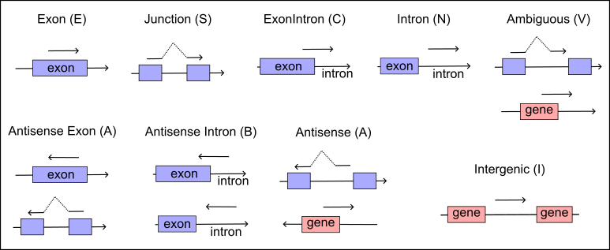
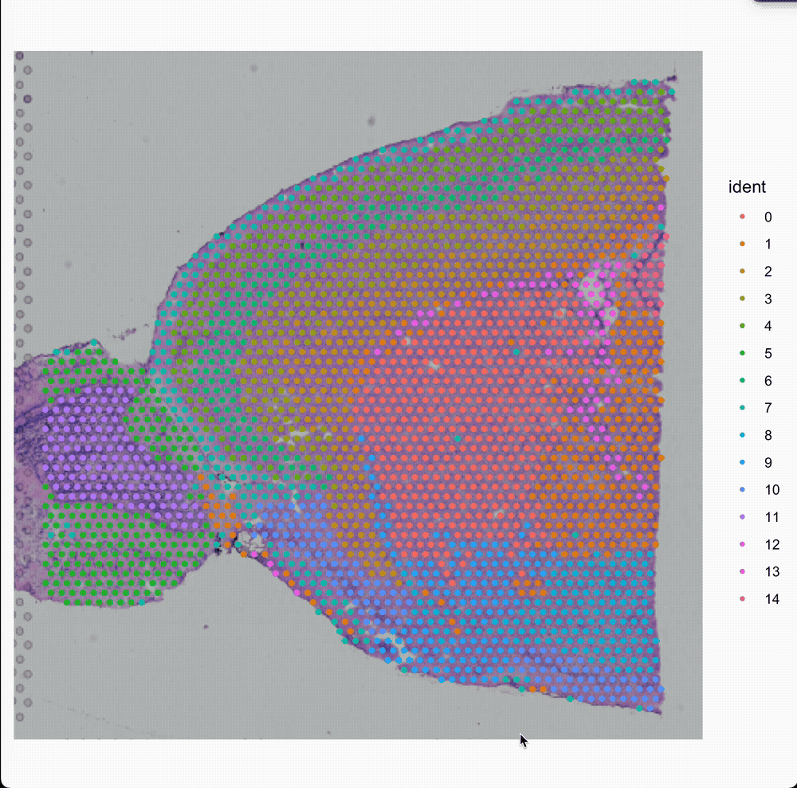
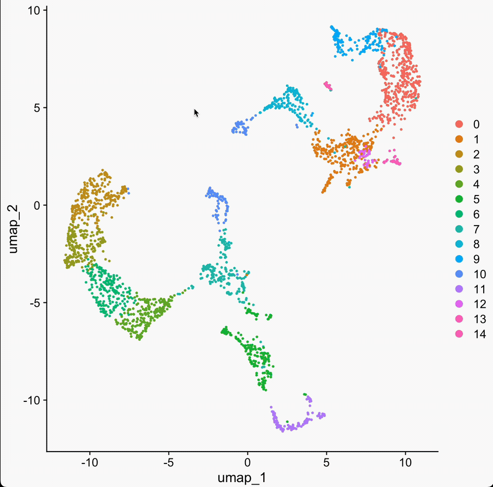
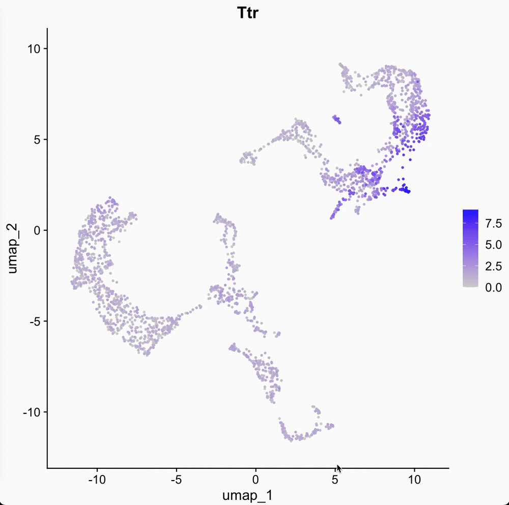
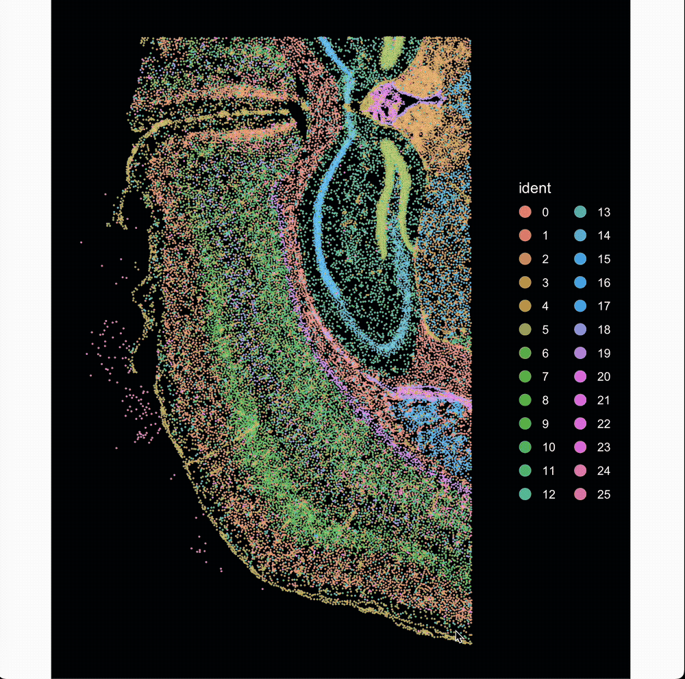
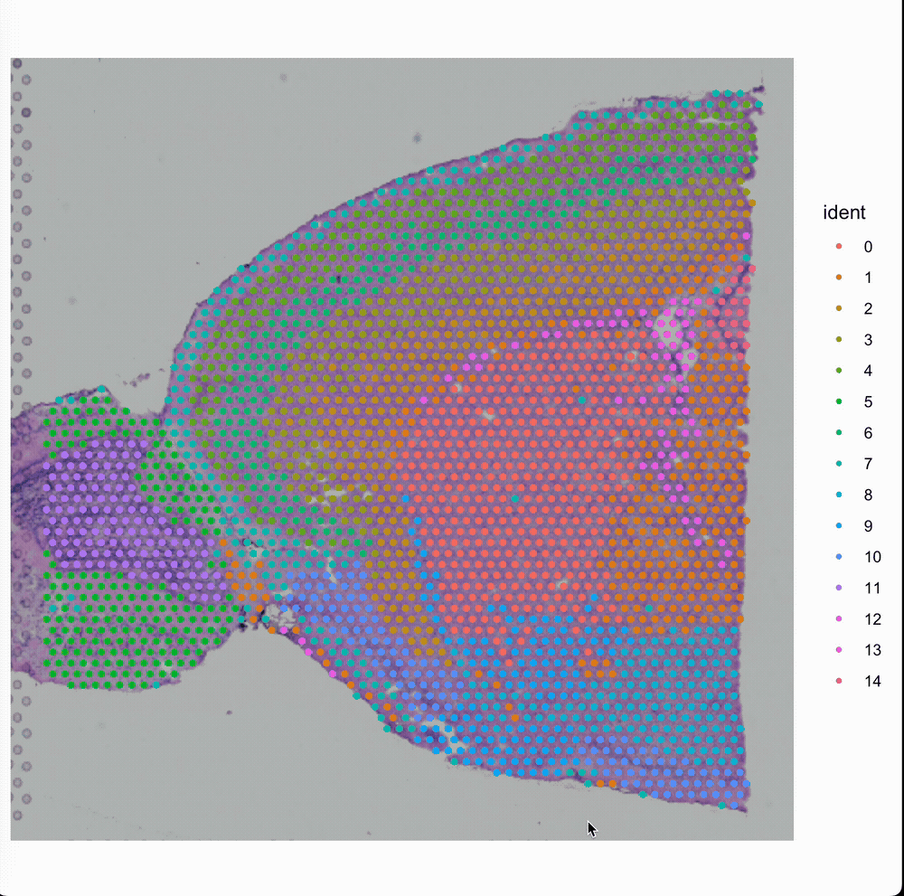

Spatial dissimilarity analysis for single-cell trajectories and supervised embeddings
Common options for all tools
- -h
- Help information
- -o FILE
- Output file.
- -tags tag(s)
- Barcode tags to group reads, usually be cell barcode tag.
- -umi tag
- UMI tag.
- -t/-@ number
- Multithreads to process data.
- -report FILE.csv
- Summary report in csv format.
parse
The parse tool is specifically designed to convert FASTQ files into the extended FASTQ+ format. It utilizes the -rule option to define the library structure, accommodating various sequencing setups. For ease of use, this tool has included predefined common library structures in the release; these can be applied using the -x option. This tool is optimized for speed and supports the correction of barcodes that have up to one mismatch.
# Parse cell barcode and UMI string from raw FASTQ.
$ PISA parse -rule CB,R1:1-10,whitelist.txt,CB,1;R1,R1:11-60;R2,R2 -report fastq.csv lane1_1.fq.gz,lane02_1.fq.gz lane1_2.fq.gz,lane2_2.fq.gz
Options :
-1 [fastq] Read 1 output.
-2 [fastq] Read 2 output.
-rule [STRING] Read structure in line. See Notice.
-p Read 1 and read 2 interleaved in the input file.
-q [INT] Drop reads if average sequencing quality below this value.
-dropN Drop reads if N base in sequence or barcode.
-report [csv] Summary report.
-t [INT] Threads. [4]
-order Keep input order.
-x Predefined code for specific library.
* C4 Library structure for DNBelab C4 RNA kit v1.
Notice :
* -rule accept tag rule STRING to parse input fastq following format "TAG,location,whitelist,corrected TAG,allow mismatch".
For each tag rule, location part should be format like R[12]:start-end. Both start and end location start from 1.
TAG and locaion parts are mandatory, and whitelist, corrected TAG and mismatch are optional.
Futhermore, multiply tags seperated by ';'. In location part, R1 stands for raw read 1, R2 stands for raw read 2.
In tag part, R1 stands for output read 1 while R2 stands for output read 2. Here are some examples.
$ PISA parse -rule 'CR,R1:1-18,barcodes.txt,CB,1;UR,R1:19-30;R1,R2:1-100' -1 read_1.fq raw_read_1.fq raw_read_2.fq
# CR,R1:1-18,barcodes.txt,CB,1 - CR tag start from 1 to 18 in read 1, and barcodes.txt are barcode whitelist,
# each barcode per line. Cell barcode will be corrected while hamming distance <= 1.
# Corrected cell barcode tag is CB.
# UR,R1:19-30 - UR tag start from 19-30 in read 1.
# R1,R2:1-100 - Sequence from 1 to 100 in read 2 output to read 1 file.
$ PISA parse -rule 'CR,R1:1-10,bc1.txt,CB,1;CR,R1:11-20,bc2.txt,CB,1;R1,R2:1-100' -1 read_1.fq raw_read_1.fq raw_read_2.fq
# CR,R1:1-10,bc1.txt,CB,1;CR,R1:11-20,bc2.txt,CB,1 - This cell barcode consist of two segments, first segment start
# from 1 to 10 in read 1, and whitelist is bc1.txt, and second segment start from 11 to 20, and whitelist is bc2.txt.
# These two segments will be combined after correction, because the corrected tag are the same.Option -report can specify a quality control report in CSV format. Here is the explanation of each term in this file.
| Terms | Description |
|---|---|
| Number of Fragments | The number of records in the FASTQ(s). For paired reads, each pair only count once. |
| Fragments pass QC | Reads or paired reads pass QC. |
| Fragments with Exactly Matched Barcodes | Barcodes exactly matched with any barcode in the candidate list. |
| Fragments with Failed Barcodes | No barcode found in the candidate list with similar search. |
fsort
The fsort tool is engineered to order FASTQ+ records based on specified tags, which can be defined using the -tags option. This tool efficiently handles file sorting: for files smaller than 1 gigabyte, it performs the sort directly. However, for larger FASTQ files, where caching the entire file in memory is impractical, fsort employs a different strategy. It splits the large file into smaller segments, sorts each segment individually, and then merges the sorted segments. This method ensures efficient handling of large datasets while maintaining the integrity and order of the FASTQ+ records.
# Sort reads by tags.
$ PISA fsort -tags CB,UR -list cell_barcodes_top10K.txt -@ 5 -o sorted.fq.gz in.fq
Options:
-tags [TAGS] Tags, such as CB,UR. Order of these tags is sensitive.
-@ [INT] Threads to compress file.
-o [fq.gz] bgzipped output fastq file.
-m [mem] Memory per thread. [1G]
-p Input fastq is smart pairing.
-T [prefix] Write temporary files to PREFIX.nnnn.tmpstream
The stream tool is designed as a framework to process FASTQ+ files, where each FASTQ+ block—defined by having identical tags and grouped together in the file—is handled individually. The -script option allows users to specify a custom bash script that processes each block. This user-defined script reads a ‘small’ FASTQ+ file, generating FASTQ or FASTA output that is then sent to stdout. The stream tool captures this output via a pipe and updates the tags to ensure that each block of reads retains its original tags. Finally, it consolidates all outputs into a single file. In essence, this tool efficiently divides and processes each FASTQ+ block through a user-defined method, then seamlessly merges the results.
# Perform user-defined script for each FASTQ+ block.
$ PISA stream -script run.sh reads.fq.gz
Options :
-tags [TAGS] Tags to define read blocks.
-script [FILE] User defined bash script, process $FQ and generate results to stdout.
-min [INT] Mininal reads per block to process. [2]
-keep Output unprocessed FASTQ+ records.
-fa Stream FASTQ output instead of FASTQ.
-tmpdir
-t Threads.
-o [FILE] Path to output file.
-nw Disable warning messages.Write a script for PISA stream
The PISA stream tool generates a temporary file named _block.fq for each block of reads, storing this file in a designated temporary directory. The path to this file is set in the environment variable ${FQ} for accessibility by subprocesses. Additionally, to ensure the uniqueness of each block, an alias named the ‘unique block index’ is exported to the environment as ${UBI}.
The following example script demonstrates how to convert FASTQ+ to FASTA and rename the sequence ID. It is crucial for users to ensure that the script’s final output (either FASTQ+ or FASTA) is directed to stdout. All other script steps should avoid producing output to stdout or stderr, except for the last step. This precaution is necessary because PISA captures the script’s output through a pipe, and any unintended characters could disrupt the data format. Scripts can be written in a bash file or specified inline within the command.
$ cat run.sh
seqtk rename ${FQ} > test.fa; seqtk rename test.fa ${UBI}sam2bam
After alignment, the sequence ID from the FASTQ+ records is retained in the RNAME field of the SAM file. Given that the RNAME field is limited to 254 characters, we also restrict the sequence ID and any optional tag fields in FASTQ+ to this length to ensure compatibility. The sam2bam tool processes these details by parsing the tags from the RNAME and appending them to the end of the SAM optional fields.
# Parse FASTQ+ read name and convert SAM to BAM.
$ PISA sam2bam -report alignment.csv -@ 5 -adjust-mapq -gtf genes.gtf -o aln.bam in.sam[.gz]
Options :
-o [BAM] Output file [stdout].
-t [INT] Work threads.
-mito [string] Mitochondria name. Used to stat ratio of mitochondria reads.
-maln [BAM] Export mitochondria reads into this file instead of standard output file.
-@ [INT] Threads to compress bam file.
-report [csv] Alignment report.
Note :
* Reads map to multiple loci usually be marked as low quality and filtered at downstream analysis.
But for RNAseq library, if reads map to an exonic locus but also align to 1 or more non-exonic loci,
the exonic locus can be prioritized as primary alignments, and mapping quality adjusts to 255. Tag
MM:i:1 will also be added for this record. Following options used to adjust mapping quality.
* Input SAM need be sorted by read name, and aligner should output all hits of a read in this SAM.
-adjust-mapq Enable adjusts mapping quality score.
-gtf [GTF] GTF annotation file. This file is required to check the exonic regions.
-qual [255] Updated quality score.Option -t is to set the threads to parse the SAM records. The -@ option is to set the threads to compress alignments in BGZF format. The default compress level of BGZF is 6 in the htslib, but here PISA has reset this value to 2 to decrease the CPU times. It’s not a good design to have both -t and -@, but will require a lot work to redesign the multithreads strategy, I have put this work in my todo list.
Option -report can specify a quality control report in CSV format. Here is the explanation of each term in this file.
| Terms | Description |
|---|---|
| Raw reads | Raw reads in the BAM files, secondary alignment will be skipped. |
| Mapped reads | Reads mapped to reference, and the ratio of raw reads. |
| Plus strand | Reads mapped to forward strand of reference. |
| Minus strand | Reads mapped to backward strand of reference. |
| Mitochondria ratio | Ratio of reads mapped to chromosome mitochondria. The default mito name is “chrM”, user should change it by -mito option if reference is different. Otherwise this value will always be 0. |
MapQ adjust method
For RNA libraries, if a read from cDNA maps to an exonic locus but also maps to one or more non-exonic regions, the exonic locus can be prioritized as primary alignments, and mapping quality adjusts to 255. In the below records below, read DP8400008965TLL1C001R0102043364 mapped to three loci, and the aligner random pick one as the primary alignment and others as secondary. Each of these alignments has low mapping quality (MAPQ == 2, is usually filtered at downstream analysis). Our adjustment method will check if only one of these alignments overlaps with exonic regions. In our example, the last alignment overlapped with gene EEF1A1, and the other two hit intergenic regions. After adjustment, the last record has been flagged as a primary hit, and the mapping quality adjusted to 255, and other alignments of the same read are updated as secondary, MAPQ adjust to 0. MM:i:1 tag also is added to the primary record after adjustment. Option -adjust-mapq is reimplemented to mirror the 10X CellRanger’s MAPQ adjustment method (https://support.10xgenomics.com/single-cell-gene-expression/software/pipelines/latest/algorithms/overview#alignment).
# Output by aligner:
DP8400008965TLL1C001R0102043364 0 9 133020979 2 100M * 0 0 GTTAATGATAACAATGCATCGTAAAACCTTCAGAAGGAAAGGAGAATGTTTTGTGGACCACTTTGGTTTTCTTGTTTGCGTGTGGCAGTTTTAAGTTTTT ...
DP8400008965TLL1C001R0102043364 272 7 22510408 2 100M * 0 0 AAAAACTTAAAACTGCCACACGCAAACAAGAAAACCAAAGTGGTCCACAAAACATTCTCCTTTCCTTCTGAAGGTTTTACGATGCATTGTTATCATTAAC ...
DP8400008965TLL1C001R0102043364 272 6 73517606 2 100M * 0 0 AAAAACTTAAAACTGCCACACGCAAACAAGAAAACCAAAGTGGTCCACAAAACATTCTCCTTTCCTTCTGAAGGTTTTACGATGCATTGTTATCATTAAC ...
# After adjustment (Seq and Qual in secondary alignments masked as *):
DP8400008965TLL1C001R0102043364 256 9 133020979 0 100M * 0 0 * ...
DP8400008965TLL1C001R0102043364 272 7 22510408 0 100M * 0 0 * ...
DP8400008965TLL1C001R0102043364 16 6 73517606 255 100M * 0 0 AAAAACTTAAAACTGCCACACGCAAACAAGAAAACCAAAGTGGTCCACAAAACATTCTCCTTTCCTTCTGAAGGTTTTACGATGCATTGTTATCATTAAC ... MM:i:1An example list here to show how to enable mapq adjuestment.
PISA sam2bam -report alignment.csv -o out.bam -adjust-mapq -gtf hg38.gtf in.samrmdup
To effectively manage PCR duplication in single-cell experiments, it is essential to consider both cell and molecular barcodes. During the feature counting stage facilitated by PISA count, deduplication is efficiently handled by relying solely on unique UMIs. This reliance makes traditional PCR deduplication unnecessary for libraries that use UMIs. Nonetheless, producing a deduplicated BAM file remains beneficial for other analytical processes, such as variant calling, or simply to reduce file size.
The rmdup tool is specifically designed to remove duplicate reads that share identical barcodes, such as UMIs and cell barcodes. This selective deduplication approach ensures that only truly redundant data is removed, thus preserving the integrity and completeness of the dataset for comprehensive downstream analyses.
# Deduplicate PCR reads with same barcodes.
$ PISA rmdup -tags CB,UR -o rmdup.bam in.bam
Options :
-tags [TAGS] Barcode tags to group reads.
-@ [INT] Threads to unpack BAM.
-o [BAM] Output bam.
-q [INT] Map Quality Score cutoff.
-k Keep duplicates, make flag instead of remove them.
-nw Disable warnings.In this version, PISA rmdup only supports single-end reads. For paired-end reads, such as scATAC data, PCR deduplication can be performed by the PISA bam2frag tool.
pick
The PISA pick tool is designed to select alignments with predefined tags and candidate values.
$ PISA pick -tags CB,GN -list cell_barcodes.txt in.bam
Options :
-tags [TAGS] Barcode tags.
-list [FILE] Barcode white list, tag values in related column will be apply.
-o [BAM] Output file.
-q [INT] Map Quality Score cutoff.
-@ [INT] Threads to unpack BAM.Depending on the number of tags specified by the user, the candidate list for tags can consist of either a single column or multiple columns. If multiple tags are specified but only one column is present in the list, the program will primarily compare the value of the first tag in the alignments with the list.
anno
Connecting alignment results with genomic features is essential in single-cell data analysis. PISA categorizes features into three main types: gene annotation, functional regions, and genetic or sequence variations. For gene annotation, the PISA anno tool efficiently organizes all exons, transcripts, and genes from a GTF database into a sorted hierarchical tree structure.
Based on their alignment status, reads are then classified into one of nine distinct types, see illustrate below Figure 1. This detailed categorization helps in accurately assessing the transcriptional landscape and understanding the complex genomic architecture within single-cell datasets.

# annotate strand-specific reads
$ PISA anno -gtf genes.gtf -o anno.bam in.bam
# annotate non-strand-specific reads, for Smartseq or bulk RNAseq
$ PISA anno -is -gtf genes.gtf -o anno.bam in.bam
# also label gene name for intronic reads, i.e. RNA velocity analysis
$ PISA anno -velo -gtf genes.gtf -o anno.bam in.bam
# annotate exon, junction, and exon skipped reads
$ PISA anno -exon -psi -gtf genes.gtf -o anno.bam in.bam
# annotate expressed peaks
$ PISA anno -bed peak.bed -o anno.bam in.bam
# annotate genetic variants (both reference allele and alternative allele)
$ PISA anno -vcf in.vcf.gz -ref-alt -o anno.bam in.bamBesides these annotation methods, PISA anno also supports a -chr-species method. This method requires a binding list for chromosome and related label relationships. The software will check the chromosome and add the related tag for each chromosome. This method, combined with PISA attrcnt can help to summarize the mixed two cell lines from different species.
# A binding list is tab-separated two columns txt file.
$ cat binding_list.txt
GRCh38_chr1 Human
GRCh38_chr21 Human
mm10_chr21 Mouse
$ PISA anno -chr-species binding.txt -btag SP -o anno_species.bam sorted.bamThe full options and descriptions list below.
# Annotate SAM/BAM records with overlapped function regions. Such as gene, transcript etc.
$ PISA anno -bed peak.bed -tag PK -vcf in.vcf.gz -vtag VF -vcf-ss -ref-alt -o anno.bam in.bam
$ PISA anno -gtf genes.gtf -o anno.bam in.bam
$ PISA anno -gtf genes.gtf -o anno.bam -sam in.sam
Options :
-o [BAM] Output bam file.
-report [csv] Summary report.
-@ [INT] Threads to compress bam file.
-q [0] Map Quality Score cutoff. MapQ smaller than this value will not be annotated.
-t [INT] Threads to annotate.
-chunk [INT] Chunk size per thread.
-anno-only Export annotated reads only.
-sam Input is SAM file, parse tags from read name.
-rev Annotation in reverse strand; Some probe ligation library for FFPE samples create reverse fragments.
-is Disable strand sensitive annotation of gene, genomic region and genetic variants.
Options for BED file :
-bed [BED] Function regions. Three or four columns bed file. Col 4 could be empty or names of this region.
-tag [TAG] Attribute tag name. Set with -bed. Default is PK.
Options for mixed samples.
-chr-species [FILE] Chromosome name and related species binding list.
-btag [TAG] Species tag name. Set with -chr-species. Default is SP.
Options for GTF file :
-gtf [GTF] GTF annotation file. gene_id,transcript_id is required for each record.
-tags [TAGs] Attribute names, more details see `Notice` below. [TX,GN,GX,RE,EX,JC]
-splice Reads covered exon-intron edge (ExonIntron type) will also be annotated with all tags.
-intron/-velo Reads covered intron regions will also be annotated with all tags.
-exon Generate exon level and junction annotation. Put exon name (chr:start-end/[[+-]/Gene) in EX tag.\
Also generate junction name (chr:exon1_end-exon2_start/[+-]/Gene) in JC tag.
-flatten Split overlapped exons into nonoverlapped bins.
-psi Annotate exclude reads tag (ER) for each exon.
-tss Annotate reads start from TSS, designed for capped library. **experiment**
-ctag [TAG] Tag name for TSS annotation. Need set with -tss.
Options for VCF file :
-vcf [VCF/BCF] Varaints file in vcf or bcf format. In default, only annotate alternative alleles.
-vtag [TAG] Tag name for variants. Set with -vcf. Default is VR.
-ref-alt Annotate ref allele.
Notice :
* If input is SAM format, will try to parse the tags in the read name.
* For GTF mode, this program will set tags in default, you could also reset them by -tags.
TX : Transcript id.
GN : Gene name.
GX : Gene ID.
RE : Region type, E (exon), N (intron), C (exon and intron), S (junction reads cover isoforms properly), V (ambiguous reads),
I (intergenic), A (antisense or antisense exon), B (antisense intron), X (one or more exons are excluded in transcrpit)
* The following tags set with -exon.
EX : Exon name tag.
JC : Isoform junction name.
FL : Flatten exon name. Only generate it with -flatten.
* The following tags set with -psi.
ER : Excluded exons.
* PSI = EX/(EX+ER); EX is the exon tag, which indicate include reads in exon.corr
The diversity of UMIs of each gene in one cell is used to evaluate the gene expression level, but the error of UMI comes from sequencing or PCR may introduce bias. PISA corr is designed to correct the UMI or barcode sequence based on Hamming distance. In default, two groups of UMI from the same gene of one cell with Hamming distance equal to 1, will be considered to originate from the same transcript. The group with high frequency will be selected as a real one, and another one will be corrected to the high one.
Because PISA corr does not require a sorted BAM, this tool will first build a correction list by caching all the raw UMIs and barcodes and then correct them in memory. After these steps, this tool will reread the file and update these records by order. This design can avoid potential bias for the same gene from different chromosomes (i.e., the HLA genes in alternative locus). However, this design also required a lot of memory for a big BAM.
CellRanger also introduces an algorithm to correct reads with the same UMI of one cell but mapping to more than one gene (https://support.10xgenomics.com/single-cell-gene-expression/software/pipelines/latest/algorithms/overview). PISA implements this method but does not enable it in default. The -cr option can be used by users to enable this function. The reason for not enable it by default is PISA corr not only is used to correct UMIs, but also can be used to correct any other types of barcodes. The following example shows how to use PISA corr to correct cell barcodes for reads in the same gene.
// Reads with same gene tag (GN) and UMI (UB) will be grouped and calculate the Hamming distance between each other.
// Only if Hamming distance == 1 will be corrected.
PISA corr -tag CR -new-tag CB -tags-block GN,UB -o cell_barcode_corrected.bam in.bamFull options of PISA corr list below.
# Correct similar barcodes (hamming distance == 1).
$ PISA corr -tag UR -new-tag UB -tags-block CB,GN -@ 5 -o corr.bam in.bam
Options :
-o [BAM] Output bam.
-tag [TAG] Tag to correct.
-new-tag [TAG] Create a new tag for corrected barcodes.
-tags-block [TAGS] Tags to define read group. For example, if set to GN (gene), reads in the same gene will be grouped together.
-cr Enable CellRanger like UMI correction method. See `Examples` for details.
-e Maximal hamming distance to define similar barcode, default is 1.
-@ [INT] Thread to compress BAM file.
Examples :
// Two groups of reads have same cell barcode (CB) and gene (GN) but their raw UMIs (UR) differ by only one base. The UMI of less
// supported is corrected to the UMI with higher support. UB save the checked or corrected UMI.
$ PISA corr -tag UR -new-tag UB -tags-block CB,GN in.bam -o corr.bam
// Same with above. Besides, if two or more groups of reads have same CB and UB but different GN, the GN with the most supporting reads
// is kept for UMI counting, and the other read groups are discarded. In case of a tie for maximal read support, all read groups are
// discarded, as the gene cannot be confidently assigned (Cell Ranger method).
$ PISA corr -cr -tag UR -new-tag UB -tags-block CB,GN in.bam -o corr.bam attrcnt
PISA attrcnt is used to summarize the meta information of the library. We start introduce this tool with few examples.
# Count reads per cell, -cb option is required to specify cell barcode tag
$ PISA attrcnt -cb CB in.bam
// the summary information output in tsv format
BARCODE Raw // the title
AGCTATGCTTCTAGTGTAAC-1 38 // cell barcode and raw reads per cell, separated by a tab
GCCGCTGATCGGCCTGCACA-1 12
GTCGCGATTCTGCTCAGAAG-1 13
GTCAGTACCATGCTCAGAAG-1 27
CAACTCGTCGGTTGTCTGAC-1 23
# Count raw reads and reads in the peaks per cell
$ PISA attrcnt -cb CB -tags PK // PK tag is annotated for reads in peak
-o summary.tsv // Summary file
example/anno/demo_1.bam
$ head summary.tsv
BARCODE Raw PK
GGCATTATCGGCTCGGTATG 2 2
TGAGTTGTGTATACTCCTAC 2 2
CCGCGGCACTACACACCAGA 1 1
ATTAGTGGTCTCCTGGTCGG 1 1
TTATTGGACCACGTTGAATA 1 1
GGAATGCCACAAGCGCCGTA 1 1
AGTCTATCGTGGCCTGCACA 5 5
AGGCACACCTCGCTGAATTC 3 3
GTCAGGATCGATAACATACG 2 2
# Count UMIs per cell
$ PISA attrcnt -cb CB -tags UB // UB is tag of corrected UMIs
-dedup // -dedup option used to remove duplication of tag values, if not set, this
// command will export reads with UB tag but not the unique UMIs per cell
-o summary.tsv anno.bam
# Count UMIs and Genes per cell
$ PISA attrcnt -cb CB -tags UB,GN // GN is tag for annotated gene; -tags can accept multiple tag names, and seperated by ","
-dedup -o summary.tsv anno.bam
$ head summary.tsv
BARCODE Raw UB GN
AGCTATGCTTCTAGTGTAAC-1 38 35 0
GCCGCTGATCGGCCTGCACA-1 12 12 0
GTCGCGATTCTGCTCAGAAG-1 13 11 0
GTCAGTACCATGCTCAGAAG-1 27 26 0
CAACTCGTCGGTTGTCTGAC-1 23 21 0
GGTACACCACAGTAGTTACG-1 12 10 0
GCGCGCCGAGGGACACTCTT-1 1 1 0
CTCTAAGCATCGAGGTTAAC-1 162 138 50
TTCGTAGCACCGATACTAGC-1 51 48 46Full list of options list below.
# Count the frequency of tag values.
$ PISA attrcnt -cb CB -tags UR,GN -dedup -all-tags in.bam
Options :
-cb [TAG] Cell Barcode, or other tag used for grouping reads.
-list [FILE] Cell barcode white list.
-tags [TAGS] Tags to count.
-dedup Deduplicate the atrributes in each tag.
-all-tags Only records with all tags be count.
-group [TAG] Group tag, count all tags for each group seperately.
-o [FILE] Output count table.
-q [INT] Map Quality to filter bam.
-no-header Ignore header in the output.
-@ [INT] Thread to unpack bam.
-ttag [TAG] Region type tag. [RE]
-ttype Region type used to count. Set `E,S` to count exon enclosed reads. Set `N,C` to count intron overlapped reads.extract
PISA extract is designed to extract the values of tags from BAM records and generate a tab-separated file.
# Extract tag values from alignments.
$ PISA extract -tags CB,UR,GN -o tags.tsv in.bam
Options :
-tags [TAGS] Tags to be extracted.
-o [FILE] Output file. tsv format
-n Print read name.
-q Map Quality Score threshold.
-all Only export if all tags have value.count
The PISA count tool is designed to generate a counts matrix for various features or tags, traditionally outputting a gene-by-cell digit matrix. Starting with version 0.4, this tool now supports the MEX format output, which is highly recommended for use in downstream analyses due to its superior performance. It’s important to note that MEX format consists of three files, so you should use the -outdir option to specify the directory where the output files will be saved.
# Count reads or fragments matrix for single-cell datasets.
$ PISA count -cb CB -anno-tag GN -umi UB -outdir exp aln.bam
$ PISA count [options] aln1.bam,aln2.bam
$ PISA count -cb RG -sample-list bam_files.txt -outdir exp
$ PISA count -tags Cx,Cy -anno-tag GN -umi UB -outdir exp -velo aln.bam
Options :
-tags/-cb [TAGs] A cell barcode tag or two tags of spatial coordinates for spatial data.
-anno-tag [TAG] Annotation tag, gene or peak.
-genome-bin [INT] If genome bin size set, genome bin count matrix will be generated, conflict with -anno-tag and -chr.
-is Ignore strand for bin counting.
-chr Count chromosome expression level, conflict with -anno-tag and -genome-bin.
-list [FILE] Barcode white list, used as column names at matrix. If not set, all barcodes will be count.
-outdir [DIR] Output matrix in MEX format into this folder.
-umi [TAG] UMI tag. Count once if more than one record has same UMI in one gene or peak.
-one-hit Skip if a read hits more than 1 gene or peak.
-q [INT] Minimal map quality to filter. Default is 20.
-t [INT] Threads.
-ttag [TAG] Region type tag. [RE]
-velo Generate spliced and unspliced matrix files for RNA velocity analysis.
-ttype [TYPE] Region type used to count. Set `E,S` to count exon enclosed reads. Set `N,C` to count intron overlapped reads.
-sample-list [FILE] A list of bam files. Each path per line.
Options for Stereoseq:
-stereoseq Stereoseq pipeline pack UMI to hex string. Need set this option to decode UMIs.
-spatial-bin [INT] Bin size for spatial coordiate. Can be set if -tags specify spatial coordinates.[1]
-dup Do NOT skip duplicate reads.
Notice :
* Region type (RE), which label functional region reads mapped, is annotated by `PISA anno`. Optional -ttype can be set
to one of region types(E/S/C/N) or combination to count reads mapped to these functional regions only.
* If you want count from more than one bam file, there are two ways to set the parameter. By seperating bam files with ',' or by
setting -sample-list option.
* If -velo set, spliced and unspliced folders will be created at outdir.For Smartseq user
PISA count also support counting gene expression from multiple bam files.
$ PISA count -file-barcode // use alias name for each bam file as cell barcode. If this flag is not set -cb must be specified.
-tags CB // Cell barcode
-sample-list bam_list.txt // bam file path and alias name
-outdir exp/ -anno-tag GN
# The `-sample-list' specify multiply files, each BAM path per line.Description of MEX file
The Market Exchange (MEX) format (https://math.nist.gov/MatrixMarket/formats.html) is designed for representing the sparse matrix. The -outdir option specifies the output directory for one MEX fold. The MEX format consists of three files, one is cell barcodes, one is feature names (genes or peak names), and the third one defines the expression or signal values.
$ ls
barcodes.tsv.gz features.tsv.gz matrix.mtx.gz
$ zcat barcodes.tsv.gz|head
AACCTGGTGAAGTTGTCGAA
AAGGAACTAAGCGCAGCACC
CGATAGAATACTTCTTCGTA
TACTATCCTCTAGCTGCTAC
TGACCATCCTACAGTCCACC
CAGATTCAACTACGAAGTGC
TTCGTAGCACTCTTCATCTC
GGCACCTTGCTTAACGTAGG
ACTTCGGATACGTATCGCCT
GACTCGCTAGTAGTCGGAAT
$ zcat features.tsv.gz|head
RP11-34P13.7
RP11-34P13.8
RP11-34P13.9
FO538757.3
FO538757.2
AP006222.2
RP4-669L17.10
RP5-857K21.4
RP11-206L10.4
RP11-206L10.9
$ zcat matrix.mtx.gz|head
%%MatrixMarket matrix coordinate integer general
% Generated by PISA v0.4-alpha-72-g09c4ded
23900 782761 11533380
1 1 2
1 2 2
1 3 2
1 4 1
1 5 2
1 6 1
1 7 2The MEX file can be read by R package Yano::ReadPISA.
bam2fq
PISA bam2fq is designed to convert alignment records to FATSQ+ records. Option -tags specify which tags will be kept in the FASTQ+. Full options list below.
# Convert BAM into fastq.
$ PISA bam2fq -tags CB,UB,GN -o out.fq aln.bam
Options :
-tags [TAGS] Export tags in read name.
-f Filter records if specified tags not all exist.
-fa Output fasta instead of fastq.
-o [fastq] Output file.
-@ [INT] Threads to unpack BAM.bam2frag
The fragment file is a five columns tab-separated flat file which is designed for scATAC-seq. The first column is the chromosome name, the second column is the start location of this fragment (0 based), and the third column is the end position in 1 based of this fragment. The fourth column is the cell barcode of this fragment and the last column is how many duplicates of this fragment.
PISA bam2frag requires the input BAM file to be sorted by coordinate. This tool will check the cell barcode and the fragment position for each paired reads, duplicates in one cell will only keep one record, and the numeber of copies for this fragment will be updated in column four.
# Convert sam record to fragment file.
$ PISA bam2frag -cb CB -list cell_barcodes.txt -o out.tsv.gz in.bam
Options:
-o [FILE] Output file. This file will be bgzipped and indexed.
-cb [TAG] Cell barcode tag.
-list [FILE] Cell barcode white list.
-q [20] Mapping quality score to filter reads.
-isize [2000] Skip if insert size greater than this. [2KB]
-bed [BED] Only convert fragments overlapped with target regions.
-black-region [BED] Skip convert fragments overlapped with black regions.
-stat [FILE] Transposition events per cell.
-@ [4] Thread to unpack and pack files.[4]
-disable-offset Disable Tn5 offset for each fragment.depth
PISA depth generates coverage information for each position of the predefined region(s). The significant difference between PISA depth and samtools depth (http://www.htslib.org/doc/samtools-depth.html) is that PISA depth use UMI rather than reads. Besides, PISA depth is strand sensitive, and can produce results for target cells.
# Count coverage depth or unique UMIs for genome locations.
Usage : PISA depth [options] sorted.bam [region]
$ PISA depth -cb CB -umi UB -tags GN -region in.bed -o depth.tsv sorted.bam
$ PISA depth -cb CB -umi UB sorted.bam chr1:1-2:+
Options :
-tag [TAG] Tag used for grouping reads.
-list [FILE] Candidate list for -tag.
-umi [TAG] UMI tag. If set, only count unique UMIs for each location.
-bed [BED] Target BED region file. If the strand in column six set, only count reads with the same strand.
-o [FILE] Output depth file. [stdout].
-q [INT] Minimal map quality to filter. [20]
-@ [INT] Threads to unpack bam. [4]
Notice :
* Require sorted and indexed BAM as input.
* Compare with `samtools depth', PISA depth considers UMIs and strand of reads.callept
The term ‘EPT’ stands for Expressed Peak Tag. EPTs can be identified by PISA within aligned reads from RNA libraries. Once identified, the relationship between each EPT and its corresponding gene can be annotated and analyzed using the Yano package. This analysis helps in understanding the functional implications of EPTs in gene expression regulation.
The callept tool is designed to call expressed peak tags (EPTs) for indexed BAM files. The peaks are defined with UMI depth >= cutoff.
$ PISA cellept -o epts.bed sorted.bam
$ PISA cellept -tag CB -list cells.txt -umi UB -o epts.bed sorted.bam
Options :
-tag [TAG] Tag used for grouping reads.
-list [FILE] Candidate list for -tag.
-umi [TAG] UMI tag. If set, only count unique UMIs for each location.
-is Ignore strand.
-gap [INT] Maximum gap to merge nearby peaks. [50]
-min-length [INT] Minimum peak length. [50]
-cutoff [INT] Cutoff of depth. [10]
-o [FILE] Output EPTs in bed format. [stdout].
-q [INT] Minimal map quality to filter. [20]
-t [INT] Threads. [4]
Notice :
* Requires sorted and indexed BAM as input.
* Compares with `MACS2` and other peak callers, PISA callept considers UMIs and strand of reads.
* For paired reads, strand of read 2 will be reversed to revert fragment strand.count2
PISA count generates the MEX format matrix for fragments per peak.
# Count fragments per peak per cell matrix.
$ PISA count2 -bed peaks.bed -t 10 -list barcodes.txt -outdir exp fragments.tsv.gz
Options :
-list [FILE] Barcode white list, used as column names at matrix. If not set, all barcodes will be count.
-outdir [DIR] Output matrix in MEX format into this fold.
-prefix [STR] Prefix of output files.
-t [INT] Threads.mergebed
Merge overlapped regions by strand and name.
$ PISA mergebed -o merged.bed sample1.bed sample2.bed
$ PISA mergebed -up 500 -down 500 -o flank.bed peaks.bed
Options:
-o [FILE] Output bed file.
-s Ignore strand.
-up [INT] Enlarge regions upstream.
-down [INT] Enlarge regions downstream.
-name Merge regions by bed name.
Notice :
* This tool accepts 3 columns or 6 columns bed file(s), strand (+/-) is set in column 6.
* By default, merging is done with respect to strandness unless -s is set.
* -up/-down is set respect to strandness, so upstream of plus strand is downstream of minus strand.annobed
Annotate the type of region and output in a BED like file. The region type can be defined into.
$ PISA annobed -gtf genes.gtf -o anno.bed in.bed
Options:
-gtf [GTF] GTF database.
-o [FILE] Output bed file.
-report [FILE] Summary report. Export in STDERR by default.
-is Ignore strand.
-gene-name Set annatated gene as bed name (column 4).
-skip-chrs Skip chromosomes if not exist in GTF. Defa
-up [1000] Annotate intergenic regions at upstream of gene.
-down [1000] Annotate intergenic regions at downstream of gene.
Output format :
chromosome,start(0based),end(1based),name,score,strand,number of covered genes, cover gene name(s),type,nearest gene name,distance to nearby gene
Notice :
* This tool accepts 3 columns or 6 columns bed file(s), strand (+/-) is set in column 6.
* By default, annotation is done with respect to strandness unless -s is set.flatten
Convert overlapped into flatten records. If strand exist, the flatten records will be strand sensitive.
$ PISA flatten -o flatten.bed overlapped.bed
Options:
-o [FILE] Output bed file.
For example:
reg1 ===========
reg2 ===========
flattening of regions:
reg1 ======
reg2 =====
reg3 ======gtffmt
Format and reorder GTF records.
$ PISA gtffmt in.gtf
Options:
-o [FILE] Output GTF file
-f Only export gene, transcript, exon and CDS records.
-key [all] Export selected keys in optional fields.
-report [stderr] Summary report file.gtf2bed
Convert GTF file to BED format.
$ PISA gtf2bed -o merged.bed in.gtf.gz
Options:
-o [FILE] Output bed file.
-type [gene|transcript|exon] Covert to bed.
-name [none|gene|transcript|exon] Set name for bed.Deprecated commands
parse0
Since v1.0, the old parse tool has been replaced by parse2, and renamed to parse0 for backup purposes. Due to its lower performance compared to parse, parse0 will be deleted from v2 onwards. The parse0 tool requires a configuration file to describe the library structure, including cell barcode locations, UMI locations, and tag names. Additionally, it generates various quality control reports and outputs cell barcode distributions to stdout. Below is the complete options list and a general workflow for filtering and counting reads.
$ PISA parse -config read_struct.json -report fastq.csv -cbdis cell_dist.tsv \
-1 out.fq lane1_1.fq.gz,lane02_1.fq.gz lane1_2.fq.gz,lane2_2.fq.gz
Options :
-1 [fastq] Read 1 output. Default is stdout.
-2 [fastq] Read 2 output.
-config [json] Read structure configure file in JSON format. Required.
-run [string] Run code, used for different library.
-cbdis [FILE] Read count per cell barcode.
-p Read 1 and read 2 interleaved in the input file.
-q [INT] Drop reads if average sequencing quality below this value.
-dropN Drop reads if N base in sequence or barcode.
-report [csv] Summary report.
-t [INT] Threads. [4]-config requires a JSON file to tell software the locations of cell barcodes and/or UMIs. An example configured file can be found at demo/demo.json.
{
"cell barcode tag":"CB",
"cell barcode":[
{
"location":"R1:1-16" # the location is 1 based
}
],
"UMI tag":"UR",
"UMI":{
"location":"R1:17-28",
},
"read 1":{
"location":"R2:1-91",
}
}Option -report can specify a quality control report in CSV format. Here is the explanation of each term in this file.
| Terms | Description |
|---|---|
| Number of Fragments | The number of records in the FASTQ(s). For paired reads, each pair only count once. |
| Fragments pass QC | Reads or paired reads pass QC. |
| Fragments with Exactly Matched Barcodes | Cell barcode exactly matched with any barcode in the candidate list. |
| Fragments with Failed Barcodes | No cell barcode found in the candidate list with similar search. |
| Fragments Filtered on Low Quality | Mean sequence quality of the records smaller than threshold. |
| Fragments Filtered on Unknown Sample Barcodes | Sample barcodes not matched with any barcode in the candidate list. |
| Q30 bases in Cell Barcode | Ratio of bases in cell barcode sequence with quality \(>=\) 30. |
| Q30 bases in Sample Barcode | Ratio of bases in sample barcode sequence with quality \(>=\) 30. |
| Q30 bases in UMI | Ratio of bases in UMI sequence with quality \(>=\) 30. |
| Q30 bases in Reads | Ratio of bases in read sequence with quality \(>=\) 30. |
Here is an example to parse barcodes and reads with a predefined configure JSON file, the test files can be found at demo directory.
$ PISA parse0 -config demo/demo.json -report demo/parse.csv demo/demo_1.fq.gz demo/demo_2.fq.gz > demo/demo.fqThe FASTQ+ format is a variant of the FASTQ. It is designed to store more features or annotations for FASTQ records but not change the own property of the FASTQ structure. Each FASTQ+ record consists of four lines.
The first line starts with an ‘
@’ character and the sequence identifier. The optional tag fields are between the sequence identifier and the first space in or at end of this line. Optional read 1 and read 2 label “/[12]” add after tags. Optional description words place at the end of this line, separated by a space.The sequence, bases consist of A, C, G, T and N.
A plus character. Optional sequence identifier can also appended here.
The base call quality scores.
The optional fields of FASTQ+ is consist of numbers of tags in TAG:TYPE:VALUE format. The tag format is inherited from the SAM tag format (https://samtools.github.io/hts-specs/SAMv1.pdf). The TAG is a two-character string that matches /[A-Za-z][A-Za-z0-9]/. TYPE is a single case-sensitive letter, which defines the format of VALUE. Tags in optional fields are separated by three ’’ characters. No space allowed in the sequence identifier and optional fields. The total length of the first line should not exceed 254 characters.
An example
In the example below, SEQ_ID is the sequence identifier that users can set or generate by software. CB is the recommended tag name for the corrected cell barcode, GN is the recommended tag for gene name, and UB is the recommended tag for UMI.
@SEQ_ID|||CB:Z:ACGT|||GN:Z:BRCA1|||UB:Z:AACG
GATTTGGGGTTCAAAGCAGTATCGA
+
1***-+*''))**5>>CCCCCCC65Optional tag fields
All optional tags for FASTQ+ follow the SAM tag format but add two more restrictions.
SAM tags allow space in type Z, but not allowed in FASTQ+ tags.
The length of SAM tags is not limited, but FASTQ+ read identifier and tags are specified to be no longer than 254 characters.
| Type | Regexp matching VALUE |
Description |
|---|---|---|
| A | [!-] |
Printable character |
| i | [-+]?[0-9]+ |
Signed integer |
| f | [-+]?[0-9]*.?[0-9]+([eE][-+]?[0-9]+)? |
Signed single-precision floating number |
| Z | [!-]* |
Printable string. |
| H | ([0-9A-F][0-9A-F])* |
Byte array in the Hex format |
| B | [cCsSiIf](,[-+]?[0-9]*.?[0-9]+([eE][-+]?[0-9]+)?)* |
Integer or numberic array |
Recommended tag names and types for single cell experiments
The following tag names and types have been widely used in single-cell experiments. Although it is not required but highly recommended following the exact definition.
| Tag name | Type | Description |
|---|---|---|
| CR | Z |
Raw cell barcode. |
| CB | Z |
Cell barcode that is confirmed against a list of known-good barcode sequences. |
| UR | Z |
Raw molecular barcode. Usually be unique molecule indentifer (UMI). |
| UB | Z |
Molecular barcode that is corrected among other molecule barcodes. |
| GN | Z |
Gene name. |
| TX | Z |
Transcript id. |
| GX | Z |
Gene id. |
Read block
A combination of tags can define the FASTQ+ block. Reads with the same tags can be selected and manipulated in a group. For example, SEQ1, SEQ2, and SEQ3 share the same cell barcode, and SEQ2 and SEQ3 share the same gene name but not for SEQ1. Using CB to define the block, all these three reads are from the same block. But if using CB and GN to determine the block, SEQ2 and SEQ3 are from the same block, different from SEQ1. Sorting the FASTQ+ file by tags can facilitate downstream analysis, i.e., assembly, for each block to be processed sequentially.
@SEQ1|||CB:Z:ACGT|||GN:Z:BRCA1
GATTTGGGGTTCAAAGCAGTATCGA
+
1***-+*''))**5>>CCCCCCC65
@SEQ2|||CB:Z:ACGT|||GN:Z:SAA1
ACACTCGAAGATACAGAAATGAGTA
+
EEEEEE6/E/EEEAEEEE/E/EEE<
@SEQ3|||CB:Z:ACGT|||GN:Z:SAA1
TATCGACAGGAAGAAGGAGGGAGGG
+
AE/EE</AEEEAEEEEE//AA/EEEFASTQ+ Version History
v1.0 : Apr 2022
Initial edition.
This website outlines the key tools and software packages developed from my research:
- FASTQ+: This format enhances the standard FASTQ file by integrating barcode information directly into the read name. This modification facilitates the harmonization of single-cell sequencing data across various platforms. FASTQ+ can be generated with PISA.
- PISA: A suite of programs specifically designed for preprocessing data from single-cell sequencing and spatial transcriptomics. It efficiently processes FASTQ+, BAM, and BED files, and generates various feature counts and annotations.
- Yano: An R package that employs the spatial dissimilarity test method as its core algorithm. Yano is tailored for exploring various biological events in single-cell and spatial transcriptomics data, including alternative splicing, allele-specific gene expression, somatic variants and more, providing comprehensive insights into cellular dynamics.
Workflows and Short Cases for scRNA-seq and Spatial Transcriptome
- From raw reads to gene counts (PISA)
- Annotate various features for alignment (PISA)
- Alternative splicing analysis for scRNA-seq (Yano)
- Allele-specific gene expression analysis for scRNA-seq (Yano)
- Annotating and prioritizing genetic variants for scRNA-seq (Yano)
- Perform alternative splicing analysis for cell trajectory and user-defined embeddings (Yano)
- Perform alternative splicing analysis for multiple Visium samples (Yano)
- Select cells from reduction maps and spatial locations (Yano)
Synopsis
PISA [tool] [options] [input-file]Install
PISA source code can be downloaded at https://github.com/shiquan/PISA/releases, or the development version from https://github.com/shiquan/PISA/. To compile PISA from sources run make in the source directory.
$ git clone https://github.com/shiquan/PISA
$ cd PISA
$ makeGet Started
The code snippet below demonstrates how to use the PISA tools to process test data and generate various feature counts. You can find the test data in the PISA/demo directory. This example provides a practical approach to familiarize yourself with the functionality of PISA and to validate its operations with provided sample data.
$ cd demo
$ ls
aln.sam.gz barcodes.txt demo_1.fq.gz demo_2.fq.gz demo.gtf.gz peaks.bed README.md var.vcf.gz
$ zcat demo_1.fq.gz|head -n 4
@A00984:220:HNJ7KDRXX:1:1118:2510:4586
AAGCATCCACACAGAGCACCCCGTTCTT
+
FFFFFFFFFFFFFFFFFFFFFFFFFFFF
$ zcat demo_2.fq.gz|head -n 4
@A00984:220:HNJ7KDRXX:1:1118:2510:4586
GCAGTGGTATCAACGCAGAGTACATGGGGAGCCTCATTGCCCAGCGGACCCCAGCCTCTGCCAGGTTCGGTCCGCCATCCTCGTCCCGTCC
+
FFFFF:FFFFFF:FFFFFFFFFF,FFFFFFFFF:FFFFFFFFF,FFFF:FFF,FFFFF:FFF:FFFFFFFFFFFFFFFFFFFF:FFFFFFF
# Convert raw FASTQ to FASTQ+ format
$ PISA parse -rule 'CR,R1:1-16,barcodes.txt,CB,1;UR,R1:17-28;R1,R2' demo_1.fq.gz demo_2.fq.gz -1 demo.fq
Number of Fragments,825
Fragments pass QC,825
Fragments with Exactly Matched Barcodes,805
Fragments with Failed Barcodes,0
[2022-04-22 12:21:35] Real time: 0.003 sec; CPU: 0.009 sec; Peak RSS: 0.010 GB.
$ head -n 4 demo.fq
@A00984:220:HNJ7KDRXX:1:1118:2510:4586|||CR:Z:AAGCATCCACACAGAG|||CB:Z:AAGCATCCACACAGAG|||UR:Z:CACCCCGTTCTT
GCAGTGGTATCAACGCAGAGTACATGGGGAGCCTCATTGCCCAGCGGACCCCAGCCTCTGCCAGGTTCGGTCCGCCATCCTCGTCCCGTCC
+
FFFFF:FFFFFF:FFFFFFFFFF,FFFFFFFFF:FFFFFFFFF,FFFF:FFF,FFFFF:FFF:FFFFFFFFFFFFFFFFFFFF:FFFFFFF
# Alignment results of FASTQ+
$ samtools view aln.sam.gz|head -n 1
A00984:220:HNJ7KDRXX:1:1118:2510:4586|||CR:Z:AAGCATCCACACAGAG|||CB:Z:AAGCATCCACACAGAG|||UR:Z:CACCCCGTTCTT 0 chr11 35139165 255 26S65M * 0 0 GCAGTGGTATCAACGCAGAGTACATGGGGAGCCTCATTGCCCAGCGGACCCCAGCCTCTGCCAGGTTCGGTCCGCCATCCTCGTCCCGTCC FFFFF:FFFFFF:FFFFFFFFFF,FFFFFFFFF:FFFFFFFFF,FFFF:FFF,FFFFF:FFF:FFFFFFFFFFFFFFFFFFFF:FFFFFFF NH:i:1 HI:i:1 AS:i:61 nM:i:1
# Convert format alignment records from SAM to BAM
$ PISA sam2bam aln.sam.gz -o aln.bam
Raw reads,825
Mapped reads,820 (99.39%)
Plus strand,820
Minus strand,0
Mitochondria ratio,0.00%
[2022-04-22 12:26:31] Real time: 0.005 sec; CPU: 0.009 sec; Peak RSS: 0.010 GB.
$ samtools view aln.bam|head -n 1
A00984:220:HNJ7KDRXX:1:1118:2510:4586 0 chr11 35139165 255 26S65M * 0 0 GCAGTGGTATCAACGCAGAGTACATGGGGAGCCTCATTGCCCAGCGGACCCCAGCCTCTGCCAGGTTCGGTCCGCCATCCTCGTCCCGTCC FFFFF:FFFFFF:FFFFFFFFFF,FFFFFFFFF:FFFFFFFFF,FFFF:FFF,FFFFF:FFF:FFFFFFFFFFFFFFFFFFFF:FFFFFFF NH:i:1 HI:i:1 AS:i:61 nM:i:1 CR:Z:AAGCATCCACACAGAG CB:Z:AAGCATCCACACAGAG UR:Z:CACCCCGTTCTT
# Annotate gene names for BAM
$ PISA anno -gtf ./demo.gtf.gz aln.bam -o anno_gtf.bam
[2022-04-22 12:28:38] GTF loading..
[2022-04-22 12:28:38] Load 2 genes.
[2022-04-22 12:28:38] Load time : 0.003 sec
Reads Mapped to Genome (Map Quality >= 0),99.4%
Reads Mapped to Exonic Regions,99.3%
Reads Mapped to Intronic Regions,0.0%
Reads Mapped to both Exonic and Intronic Regions,0.7%
Reads Mapped Antisense to Gene,0.0%
Reads Mapped to Intergenic Regions,0.0%
Reads Mapped to Gene but Failed to Interpret Type,0.0%
[2022-04-22 12:28:38] Real time: 0.026 sec; CPU: 0.086 sec; Speed : 9528 records/sec; Peak RSS: 0.034 GB.
# Correct UMIs amongst other UMIs from the same cell and mapped to the same gene, and create new tag UB for corrected UMIs
$ PISA corr -tag UR -new-tag UB -tags-block CB,GN anno_gtf.bam -o corr.bam
[2022-04-22 12:36:21] Building index ..
[2022-04-22 12:36:21] Build time : 0.002 sec
[2022-04-22 12:36:21] Real time: 0.077 sec; CPU: 0.085 sec
$ samtools view corr.bam|head -n 1
A00984:220:HNJ7KDRXX:1:1118:2510:4586 0 chr11 35139165 255 26S65M * 0 0 GCAGTGGTATCAACGCAGAGTACATGGGGAGCCTCATTGCCCAGCGGACCCCAGCCTCTGCCAGGTTCGGTCCGCCATCCTCGTCCCGTCC FFFFF:FFFFFF:FFFFFFFFFF,FFFFFFFFF:FFFFFFFFF,FFFF:FFF,FFFFF:FFF:FFFFFFFFFFFFFFFFFFFF:FFFFFFF NH:i:1 HI:i:1 AS:i:61 nM:i:1 CR:Z:AAGCATCCACACAGAG CB:Z:AAGCATCCACACAGAG UR:Z:CACCCCGTTCTT RE:A:E GX:Z:ENSG00000026508.18 GN:Z:CD44 TX:Z:ENST00000263398.10,ENST00000428726.7,ENST00000526025.2 UB:Z:CACCCCGTTCTT
# Count gene X cell features
$ mkdir exp
$ PISA count -cb CB -anno-tag GN -outdir exp -umi UB corr.bam
[2022-04-22 12:38:44] Real time: 0.033 sec; CPU: 0.013 sec; Peak RSS: 0.010 GB.
# Gene expression matrix generated in the Market Exchange format
$ ls exp/
barcodes.tsv.gz features.tsv.gz matrix.mtx.gz
# Not just gene features, we can also annotate variants and functional regions to reads
$ PISA anno -bed peaks.bed -tag PK -vcf var.vcf.gz -vtag VR corr.bam -o anno_vcf_bed.bam
Reads Mapped to Genome (Map Quality >= 0),99.4%
Reads Mapped to BED regions / Peaks,0.0%
[2022-04-22 12:43:01] Real time: 0.027 sec; CPU: 0.090 sec; Speed : 9085 records/sec; Peak RSS: 0.034 GB.
$ samtools view anno_vcf_bed.bam|grep "VR:Z"|grep "PK:Z"|head -n 1
A00984:220:HNJ7KDRXX:1:2266:27597:30843 0 chr11 35229688 255 91M * 0 0 CCCAGGGTTAATAGGGCCTGGTCCCTGGGAGGAAATTTGAATGGGTCCATTTTGCCCTTCCATAGCCTAATCCCGGGGCATTGTTTTCCAC
FFFF,FFFFFFFFFF,FFFFFFF:,:FFFFFF,FF:FFFFFFFFFFF:,,:F:F:F,F:F:F,FFFF,F:FFFF,FF,FF:FFFFFFF:F: NH:i:1 HI:i:1 AS:i:85 nM:i:2 CR:Z:ATTGTTCCAAGTCCCG CB:Z:ATTGTTCCAAGTCCCG UR:Z:TCTTTAAGTCAG RE:A:E GX:Z:ENSG00000026508.18 GN:Z:CD44 TX:Z:ENST00000263398.10,ENST00000428726.7,ENST00000425428.6,ENST00000433892.6,ENST00000525469.1 UB:Z:TCTTTAAGTCAG PK:Z:demo_peak_14a;demo_peak_14b VR:Z:chr11:35229771C>T
# Summarize the reads, UMIs, genes, peaks, and variants per cell
$ PISA attrcnt -cb CB -tags UB,GN,PK,VR anno_vcf_bed.bam -dedup |head -n 5
BARCODE Raw UB GN PK VR
AAGCATCCACACAGAG 503 132 1 15 1
ATTGTTCCAAGTCCCG 533 124 1 13 1
AAGCATCCACACNGAG 3 1 1 1 0
AAGCNTCCACACAGAG 3 1 1 1 0
# Deduplicate BAM file for each cell
$ PISA rmdup -tags CB corr.bam -o rmdup.bam -nw
[2022-04-22 12:59:39] Deduplicating chr11
[2022-04-22 12:59:39] All reads,820
[2022-04-22 12:59:39] Duplicate reads,125
[2022-04-22 12:59:39] Duplicate ratio,0.1524
[2022-04-22 12:59:39] Real time: 0.008 sec; CPU: 0.015 sec; Peak RSS: 0.010 GB.
# Deduplicate BAM file for each molecular
$ PISA rmdup -tags CB,UR corr.bam -o rmdup1.bam -nw
[2022-04-22 13:00:35] Deduplicating chr11
[2022-04-22 13:00:35] All reads,820
[2022-04-22 13:00:35] Duplicate reads,0
[2022-04-22 13:00:35] Duplicate ratio,0.0000
[2022-04-22 13:00:35] Real time: 0.009 sec; CPU: 0.015 sec; Peak RSS: 0.011 GB.
# Select all reads annotated to gene CD44
# Generate a gene candidate list
$ echo "CD44" > gene.txt
$ PISA pick -tags GN -list gene.txt anno_vcf_bed.bam -o picked.bam
[2022-04-22 13:03:01] Real time: 0.009 sec; CPU: 0.016 sec
# Select reads with more features
$ awk '{printf("%s\tCD44\n", $1)}' barcodes.txt > candidates.txt
$ cat candidates.txt
AAGCATCCACACAGAG CD44
ATTGTTCCAAGTCCCG CD44
GCACATAGTCAGTTTG CD44
$ PISA pick -tags CB,GN -list candidates.txt anno_vcf_bed.bam -o picked.bam
[2022-04-22 13:09:28] Real time: 0.007 sec; CPU: 0.013 sec
# Convert BAM to FASTQ+
$ PISA bam2fq -tags CB,GN picked.bam -o pick.fq
$ head -n 4 pick.fq
@A00984:220:HNJ7KDRXX:1:1118:2510:4586|||CB:Z:AAGCATCCACACAGAG|||GN:Z:CD44
GCAGTGGTATCAACGCAGAGTACATGGGGAGCCTCATTGCCCAGCGGACCCCAGCCTCTGCCAGGTTCGGTCCGCCATCCTCGTCCCGTCC
+
FFFFF:FFFFFF:FFFFFFFFFF,FFFFFFFFF:FFFFFFFFF,FFFF:FFF,FFFFF:FFF:FFFFFFFFFFFFFFFFFFFF:FFFFFFF
# Sort FASTQ+ reads by CB and GN
$ PISA fsort -tags CB,GN pick.fq -o fsort.fq.gz
[2022-04-22 13:22:50] Write 795 records to fsort.fq.gz.0000.bgz.
[2022-04-22 13:22:50] Unlink fsort.fq.gz.0000.bgz
[2022-04-22 13:22:50] Create fsort.fq.gz from 1 files.
[2022-04-22 13:22:50] Real time: 0.021 sec; CPU: 0.020 sec
$ zcat fsort.fq.gz|head -n 8
@A00984:220:HNJ7KDRXX:1:1118:2510:4586|||CB:Z:AAGCATCCACACAGAG|||GN:Z:CD44
GCAGTGGTATCAACGCAGAGTACATGGGGAGCCTCATTGCCCAGCGGACCCCAGCCTCTGCCAGGTTCGGTCCGCCATCCTCGTCCCGTCC
+
FFFFF:FFFFFF:FFFFFFFFFF,FFFFFFFFF:FFFFFFFFF,FFFF:FFF,FFFFF:FFF:FFFFFFFFFFFFFFFFFFFF:FFFFFFF
@A00984:220:HNJ7KDRXX:1:2143:21640:21496|||CB:Z:AAGCATCCACACAGAG|||GN:Z:CD44
CCTGCCCCGCGCCCAGAGATCCTCCAGCTCCTTTCGCCCGCGCCCTACGTTCGCTCCGGACACCATGGACAAGTATTGGTGGAACACAGCC
+
,,FFFFFFFF,F,,:F,F,F:FFF,FFFFFF,F::F,FF,F:FF:,,FF:FFF,:FFFF:FFF,::FFFF,F:F,FFFF,,F,FFF,F,::
# Assembly reads mapped to CD44 of the same cell into contigs
# This step requires Trinity software and seqtk already installed in your environment
$ PISA stream -tags CB,GN -script 'Trinity --seqType fq --SS_lib_type F --single ${FQ} --max_memory 1G 2>/dev/null 1>/dev/null; seqtk rename trinity_out_dir.Trinity.fasta ${UBI}_ 2>/dev/null' -t 10 -fa -nw ./fsort.fq.gz -o assem.fa
[2022-04-22 13:24:21] Real time: 5.607 sec; CPU: 0.010 sec; Peak RSS: 0.010 GB.
$ seqtk seq assem.fa -l 100 |head
>Z_AAGCATCCACACAGAG_Z_CD44_1|||CB:Z:AAGCATCCACACAGAG|||GN:Z:CD44 len=439 path=[0:0-438]
GAAATTAGGGCCCAATTAATAATCAGCAAGAATTTGATCGTTCCAGTTCCCACTTGGAGGCCTTTCATCCCTCGGGTGTGCTATGGATGGCTTCTAACAA
AAACTACACATATGTATTCCTGATCGCCAACCTTTCCCCCACCAGCTAAGGACATTTCCCAGGGTTAATAGGGCCTGGTCCCTGGGAGGAAATTTGAATG
GGTCCATTTTGCCCTTCCATAGCCTAATCCCTGGGCATTGTTTTCCACTGAGGTTGGGGGTTGGGGTGTACTAGTTACACATCTTCAACAGACCCCCTCT
AGAAATTTTTCAGATGCTTCTGGGAGACACCCAAAGGGTGAAGCTATTTATCTGTAGTAAACTATTTATCTGTGTTTTTGAAATATTAAACCCTGGATCA
GTCCTTTGATCAGTATAATTTTTTAAAGTTACTTTGTCA
>Z_AAGCATCCACACAGAG_Z_CD44_2|||CB:Z:AAGCATCCACACAGAG|||GN:Z:CD44 len=384 path=[0:0-383]
CCTGGTAGAATTGGCTTTTCTAGCAGAACCTTTCCAAAAGTTTTATATTGAGATTCATAACAACACCAAGAATTGATTTTGTAGCCAACATTCATTCAAT
ACTGTTATATCAGAGGAGTAGGAGAGAGGAAACATTTGACTTATCTGGAAAAGCAAAATGTACTTAAGAATAAGAATAACATGGTCCATTCACCTTTATG
TTATAGATATGTCTTTGTGTAAATCATTTGTTTTGAGTTTTCAAAGAATAGCCCATTGTTCATTCTTGTGCTGTACAATGACCACTGTTATTGTTACTTT
# Align assembled reads to reference and convert to BAM file
# Here I use minimap2 for simplicity
$ minimap2 -x splice -a ~/Documents/datasets/GRCh38/fasta/genome.fasta assem.fa 1> asm_aln.sam
[M::mm_idx_gen::50.495*1.81] collected minimizers
[M::mm_idx_gen::71.980*2.16] sorted minimizers
[M::main::71.980*2.16] loaded/built the index for 194 target sequence(s)
[M::mm_mapopt_update::75.057*2.11] mid_occ = 767
[M::mm_idx_stat] kmer size: 15; skip: 5; is_hpc: 0; #seq: 194
[M::mm_idx_stat::77.004*2.09] distinct minimizers: 167225302 (35.42% are singletons); average occurrences: 6.036; average spacing: 3.071; total length: 3099750718
[M::worker_pipeline::77.010*2.09] mapped 13 sequences
[M::main] Version: 2.21-r1071
[M::main] CMD: minimap2 -x splice -a /home/shiquan/Documents/datasets/GRCh38/fasta/genome.fasta assem.fa
[M::main] Real time: 77.358 sec; CPU: 161.000 sec; Peak RSS: 18.519 GB
$ PISA sam2bam asm_aln.sam -o asm_aln.bam
Raw reads,13
Mapped reads,13 (100.00%)
Plus strand,13
Minus strand,0
Mitochondria ratio,0.00%
[2022-04-22 13:30:20] Real time: 0.001 sec; CPU: 0.006 sec; Peak RSS: 0.010 GB.
$ samtools view asm_aln.bam|head -n 1
Z_AAGCATCCACACAGAG_Z_CD44_1 0 chr11 35229531 60 439M * 0 0 GAAATTAGGGCCCAATTAATAATCAGCAAGAATTTGATCGTTCCAGTTCCCACTTGGAGGCCTTTCATCCCTCGGGTGTGCTATGGATGGCTTCTAACAA
AAACTACACATATGTATTCCTGATCGCCAACCTTTCCCCCACCAGCTAAGGACATTTCCCAGGGTTAATAGGGCCTGGTCCCTGGGAGGAAATTTGAATG
GGTCCATTTTGCCCTTCCATAGCCTAATCCCTGGGCATTGTTTTCCACTGAGGTTGGGGGTTGGGGTGTACTAGTTACACATCTTCAACAGACCCCCTCT
AGAAATTTTTCAGATGCTTCTGGGAGACACCCAAAGGGTGAAGCTATTTATCTGTAGTAAACTATTTATCTGTGTTTTTGAAATATTAAACCCTGGATCA
GTCCTTTGATCAGTATAATTTTTTAAAGTTACTTTGTCA * NM:i:1 ms:i:436 AS:i:436 nn:i:0 tp:A:P cm:i:137 s1:i:430 s2:i:0 de:f:0.0023 rl:i:0 CB:Z:AAGCATCCACACAGAG GN:Z:CD44List of commands
| Tool | Description |
|---|---|
| The following tools are used to process FASTQ/FASTQ+ files. | |
| parse | Parse barcodes from FASTQ reads to FASTQ+. |
| fsort | Sort FASTQ+ records by barcodes. |
| stream | Perform user-defined process for each read block. |
| addtags | Add tag string to FASTQ reads. |
| The following tools are used to process BAM files. | |
| sam2bam | Parse FASTQ+ read name and convert SAM to BAM. |
| rmdup | Remove PCR duplicates per molecular. |
| pick | Pick alignments with tags. |
| anno | Annotate functional regions or gene names. |
| corr | Correct error prone UMIs. 1 mismatch considered. |
| attrcnt | Count raw reads and tag values per cell. |
| extract | Extract tag value from BAM. |
| count | Count feature X cell matrix from BAMs. |
| bam2fq | Convert BAM to FASTQ+ file with selected tags. |
| bam2frag | Generate fragment file. |
| depth | Coverage depth/UMI for target regions. |
| addtags | Add tag string to BAM alignments. |
| callept | Call expressed peak tags (EPTs) for RNA library. |
| The following tool used to process fragment file. | |
| count2 | Count peak X cell matrix from fragment file. |
| The following tools used to process BED files. | |
| mergebed | Merge BED files. |
| annobed | Annotate BED files with genes and functional elements. |
| flatten | Flatten overlapped regions to nonoverlaps. |
| The following tools used to process GTF files. | |
| gtffmt | Format and reorder GTF file. |
| gtf2bed | Convert GTF to BED. |
Commands and options
{{< include _commands.qmd >}}Difference in alignment annotation between PISA and CellRanger
In most cases, PISA annotation produces results similar to CellRanger, but there are two key differences. In CellRanger, exonic reads are defined as those that overlap with an exon by at least 50% of the read length. In PISA, however, reads overlapping with an exon are classified into three distinct categories. Exonic reads are fully enclosed within an exon (E). If a read partially overlaps both an exon and an intron, it is classified as exonintron (C). Junction reads spanning more than one exon are classified as spliced reads (S). By default, only exonic (E) and spliced reads (S) are counted towards gene expression, but exonintronic (C) are skipped unless option -splice or -intron is set. Therefore, PISA anno is more stringent than CellRanger in gene annotation. However, for third-generation sequencing reads, small indels may be introduced during sequencing, causing imperfect alignment at splice sites or gene ends. In these cases, the -vague-edge option can be used to account for such mapping variances.
The second difference relates to UMI handling. In CellRanger, if a UMI maps to more than one gene, it is discarded. In contrast, PISA annotates all genes if the read is fully enclosed within the exons of these genes, and the UMI is counted for all of them. However, this type of reads can be skipped in PISA if the -one-hit option is set during the PISA count process.
For more information on CellRanger’s counting strategy, you can refer to the official documentation: Cell Ranger Algorithm Overview.
Changelog
v1.6 2025/05/29
- Fix a bug if gene_name or gene_id is empty in GTF, annotation may case segmental fault.
PISA binmethod is introduced.
v1.5 2025/03/17
Check and label EXACT_MATCH for all cell barcode segments. Previous only check the first segment. Thanks to @lishuangshuang0616 report this bug.
v1.4 2025/03/15
- Update
-anno-tagsinstead of-anno-tagto allow specify more than one tag. Only count tag 1 if other tags exist in the alignment.
v1.3 2024/10/10
- Remove
-vcf-ssoption forPISA anno. Enable strand sensitive mode in default for genetic variant annotation.
v1.2 2024/9/7
- Fix a bug of
PISA corr. This bug was caused by the recent update todict.c. ThePISA corr function was not updated accordingly. This issue will not influence the result.
v1.1 2024/6/11
- -psi and -flatten added for
PISA anno; - Add new tools
gtf2bedandflatten.
v1.0 2023/12/2
- EPT calling method added.
mergebedandannobedfor BED file added.- New parameters added to
anno.
v1.0a 2023/10/20
- Major update.
- New
calleptmethod introduced. Check EPT paper for details. - New
mergebedandannobedmethods added. - New
-vcf-ssand-alt-refnow added toPISA anno PISA countcan count bin and chromosome expression.
v0.12 2022/06/18
- Fix the number of records in MEX file.
v0.12b 2022/04/26
- Bugs fixed.
- Change compress level of BGZF from 6 to 2, speed up few tools.
- Now accept unorder GTFs
- New tool
gtfmtintroduced to format a GTF file. - Add manual and FASTQ+ specification.
v0.12a 2022/03/31
- Add
parse2.
v0.11a 2022/03/13
- Add
counts2, count peaks X cells matrix from the fragment file.
v0.10 2022/01/06
- Update
bam2frag, export a fragment file compatible with 10X cellranger-ATAC.
v0.10b 2021/12/09
PISA countnow has-velooption to export unspliced and spliced matrix together. For velocity analysis, remember to use-intronto annotate reads.PISA parsesupport multi-threads.
v0.10a 2021/11/06
PISA countsupport count spliced and unspliced reads.PISA countsupport count from multiple bam files.
v0.9 2021/10/14
- Rewrite
rmdup. Not support paired reads for now.
v0.8 2021/07/20
- Reduce memory usage of
count - Fix region query bug of
anno -bed - Add
anno -vcfmethod
v0.7 2020/11/20
- Introduce the PCR deduplicate method
rmdup. - Mask read and qual field as * instead of sequence for secondary alignments in the BAM file.
v0.6 2020/10/29
PISA attrcnt, Skip secondary alignments before counting readsPISA annofix segments fault bugs when loading malformed GTF
v0.5 2020/08/27
- Add
PISA bam2fragfunction (experimental). PISA annoSkip secondary alignments when counting total reads.
v0.4 2020/07/14
PISA sam2bamadd mapping quality adjustment method;- Rewrite UMI correction index structure to reduce memory use;
- Fix bugs.
v0.4alpha 2020/05/2
PISA annouse UCSC bin scheme instead of linear search for reads query gene regions. Fix the bug of misannotated antisense reads.PISA countuse MEX output instead of plain cell vs gene table.
v0.3 2020/03/26
Fix bugs and improve preformance.
0.0.0.9999 2019/05/19
Init version.
TODO list
- Improve multi-threads performance.
Support Stereo-seq and VisiumSpeed upPISA countandPISA corr.- Implement parse strategy for cell hash and CITEseq (frozen).
Assemble reads original from one molecule;Implement new designed and more user-friendlyparse;- Support loom output (frozen);
Export unspliced matrix for velocity;UpgradePISA parsefor faster process fastqs.
Reporting Issues
If you have any suggestion or report issues, please using Github issues page https://github.com/shiquan/PISA/issues.
Citation
Shi Q, Liu S, Kristiansen K, Liu L. The FASTQ+ format and PISA. Bioinformatics. 2022 Sep 30;38(19):4639-4642. doi: 10.1093/bioinformatics/btac562. PMID: 35993907.
Introduction
Yano represents an R/C toolkit designed for conducting spatial dissimilarity analysis on single-cell RNA sequencing data. This method revolves around the core concept of examining the distinct expression patterns of a given feature (e.g. exon, snp allele) in relation to its associated binding feature (typically a gene or another allele at the same genomic locus) within the context of cell lineage (1D), spatial position (2D), or the multi-dimensional PCA space. The discernible differences in feature expression patterns and their binding features provide insights into a range of biological phenomena, including alternative splicing, cis-antisense RNA regulation, allele-specific gene expression, and more.
Yano is seamlessly integrated with Seurat, building upon the Seurat object’s framework. Users can perform conventional cell clustering analyses using the state-of-the-art Seurat pipeline and then incorporate exon, SNP counts as new “assays” within the Seurat objects. Subsequently, Yano facilitates the assessment of spatial dissimilarity between these two assays. For more details about the method, please refer to our manuscript.
INSTALL
if (!require("BiocManager")) install.packages('BiocManager')
BiocManager::install("shiquan/Yano")Notice: Multithread mode is disabled on macOS by default due to the lack of OpenMP support. However, data.table provides a useful tutorial on how to enable OpenMP on macOS. For more information, please refer to this guide: https://github.com/Rdatatable/data.table/wiki/Installation#enable-openmp-for-macos.
Get started
A typical workflow with Yano starts by using a built-in dataset.
```{r message=FALSE, warning=FALSE, fig.align=‘center’, fig.width=12, fig.height=6} require(Yano) data(“glbt_small”) DefaultAssay(glbt_small) <- “RNA” glbt_small <- NormalizeData(glbt_small) %>% RunUMAP(dim = 1:20)
DimPlot(glbt_small, label = TRUE, label.size = 5)
DefaultAssay(glbt_small) <- “exon” glbt_small <- NormalizeData(glbt_small) glbt_small <- ParseExonName(glbt_small) grep(“_wm\(",names(glbt_small), value=TRUE) glbt_small <- RunAutoCorr(glbt_small) grep("_wm\)“,names(glbt_small), value=TRUE) glbt_small <- SetAutoCorrFeatures(glbt_small) glbt_small <- RunBlockCorr(glbt_small, bind.name =”gene_name”, bind.assay = “RNA”)
Manhattan plot for spatial dissimilarity test result
FbtPlot(glbt_small, val = “gene_name.padj”)
FeaturePlot(glbt_small, features = c(“chr19:16095264-16095454/+/TPM4”, “TPM4”), order=TRUE)
Track plot for gene coverage at different cell types
db <- gtf2db(“./gencode.v44.annotation.gtf.gz”) TrackPlot(bamfile=“./Parent_SC3v3_Human_Glioblastoma_possorted_genome_bam.bam”, gtf =db, gene = “TPM4”, junc = TRUE, cell.group = Idents(glbt_small), highlights = c(16095264,16095454))
See short cases for more details.
## Short cases
- [Alternative splicing analysis for scRNA-seq](https://shiquan.github.io/Yano_AS.html)
- [Allele-specific gene expression analysis for scRNA-seq](https://shiquan.github.io/Yano_ASE.html)
- [Annotating and prioritizing genetic variants for scRNA-seq](https://shiquan.github.io/Yano_anno.html)
- [Perform alternative splicing analysis for cell trajectory and user-defined embeddings](Yano_trajectory.Rmd)
- [Perform alternative splicing analysis for multiple Visium samples](https://shiquan.github.io/Visium.html)
## Changelog
<details>
<summary>1.0 2025/02/19</summary>
First stable release.
</details>
<details>
<summary>0.0.0.9999 2023/03/22</summary>
Init version.
</details>
## Issues or questions
- [https://github.com/shiquan/Yano/issues](https://github.com/shiquan/Yano/issues)
- [https://github.com/shiquan/Yano/discussions](https://github.com/shiquan/Yano/discussions)
## Functions
Function(s) | Description
|---|---|
|[annoBED](Yano/annoBED.md)|Annotate BED with preload GTF.|
|[annoVAR](Yano/annoVAR.md)|Annotate genetic variants with preload GTF and/or VCF databases.|
|[AutoCorrFeatures](Yano/AutoCorrFeatures.md)|Select spatial autocorrelated features.|
|[FbtPlot](Yano/FbtPlot.md)|Generate a mahattan plot for features.|
|[FindAltExp](Yano/FindAltExp.md)|Find group specific alternative expressed features.|
|[FindAllAltExp](Yano/FindAllAltExp.md)|Find alternative expressed features for all groups.|
|[GetWeights](Yano/GetWeights.md)|Get weight matrix.|
|[gtf2db](Yano/gtf2db.md)|Load GTF database into memory.|
|[mergeMatrix](Yano/mergeMatrix-SMatrix-method.md)|Merge two or more count matrix into one.|
|[ParseBED](Yano/ParseBED.md)|Parse chromsome name, locations and strand from BED names.|
|[ParseExonName](Yano/ParseExonName.md)|Parse chromsome name, locations, strand and gene name from Exon/Junction names.|
|[ParseVarName](Yano/ParseVarName.md)|Parse chromsome name, locations and strand from genetic variant names.|
|[PSIPlot](Yano/PSIPlot.md)|Plot Percent Spliced-IN value on a reduction map.|
|[RatioPlot](Yano/RatioPlot.md)|Plot ratio of feature and binding feature expression on a reduction map.|
|[ReadPISA](Yano/ReadPISA.md)|Load raw matrix which generated by PISA.|
|[RunAutoCorr](Yano/RunAutoCorr.md)|Perform spatial autocorrelation test for features.|
|[RunBlockCorr](Yano/RunBlockCorr.md)|Perform spatial dissimilarity test for features.|
|[RunDEXSeq](Yano/RunDEXSeq.md)|Run alternative expression analysis with DEXSeq.|
|[QuickRecipe](Yano/QuickRecipe-Seurat-method.md)|Run Seurat pipeline.|
|[SetAutoCorrFeatures](Yano/SetAutoCorrFeatures.md)|Setup spatial autocorrelated features.|
|[TrackPlot](Yano/TrackPlot.md)|Generate tracks plot from BAM(s).|
|[varanno](Yano/varanno.md)|Low level version of annoVAR, need specify chr, position manually.|
---
title: Count gene, exon, junction and SNV expression from a BAM file
format:
html:
code-overflow: wrap
include-in-header:
- text: |
<style>
.cell-output-stdout code {
word-break: break-wor !important;
white-space: pre-wrap !important;
}
</style>
---
The following vignette demonstrates how to generate various feature counts from an alignment BAM file. Here we use a 10X demo data of human glioblastoma cells. The description of data can be found at <https://www.10xgenomics.com/datasets/human-glioblastoma-multiforme-3-v-3-whole-transcriptome-analysis-3-standard-4-0-0>.
## Prepare the raw data and reference
- Download [alignment data (BAM)](https://cf.10xgenomics.com/samples/cell-exp/4.0.0/Parent_SC3v3_Human_Glioblastoma/Parent_SC3v3_Human_Glioblastoma_possorted_genome_bam.bam). (~14G).
#### The following file is used for variant calling and allele specific gene expression. It can be skipped for alternative splicing analysis.
- BAM Index File (for variant calling):
[Download BAM index](https://cf.10xgenomics.com/samples/cell-exp/4.0.0/Parent_SC3v3_Human_Glioblastoma/Parent_SC3v3_Human_Glioblastoma_possorted_genome_bam.bam.bai)
- Human Reference Databases and Gene Annotation Files:
- [GRCh38.p13 genome](https://ftp.ebi.ac.uk/pub/databases/gencode/Gencode_human/release_32/GRCh38.p13.genome.fa.gz)
- [Gencode v44 annotation](https://ftp.ebi.ac.uk/pub/databases/gencode/Gencode_human/release_44/gencode.v44.annotation.gtf.gz)
## Programs we will use
- PISA (>=v1.3) (<https://github.com/shiquan/PISA>)
- bcftools (<https://github.com/samtools/bcftools>)
- samtools (<https://github.com/samtools/samtools>)
## Step by step tutorial
### 1. Genetic variants calling
```bash
# Unpack the FASTA file
gzip -d GRCh38.p13.genome.fa.gz
# Build the FASTA index
samtools faidx GRCh38.p13.genome.fa
# Perform variant calling
bcftools mpileup -Ou -f GRCh38.p13.genome.fa ./Parent_SC3v3_Human_Glioblastoma_possorted_genome_bam.bam | bcftools call -vmO z -o var.vcf.gzNotes:
- While several new methods for genetic variant calling have been developed, the basic principle remains the same: identifying differences between sequence reads and the reference genome. For simplicity, we are using the ‘traditional’ bcftools approach.
- There is no need to filter raw genetic variants by sequencing depth or strand bias tests. Since this is strand-specific RNA sequencing data, strand bias is expected in many cases. Instead, the feature expression matrix can be filtered by cells during downstream analysis.
2. Annotate various features
The following command generates gene, transcript, exon, exon skipped reads, junction and genetic variant for each alignment:
PISA anno -gtf gencode.v44.annotation.gtf.gz -exon -psi -vcf var.vcf.gz -ref-alt -o anno.bam Parent_SC3v3_Human_Glioblastoma_possorted_genome_bam.bam The above command will annotate genes, exons, junctions, and genetic variants all at once. However, it is also possible to annotate different features sequentially. For example, the command below produces the same results as the previous one, but allows for stepwise annotation.
PISA anno -gtf gencode.v44.annotation.gtf.gz -exon -psi -o anno1.bam Parent_SC3v3_Human_Glioblastoma_possorted_genome_bam.bam
PISA anno -vcf var.vcf.gz -ref-alt -o anno2.bam anno1.bamNotes:
-exon: Generates exon and junction names.-psi: Generate labels for exon skipped reads, named after the skipped exons.-ref-alt: For genetic variants, both reference allele and alternative allele will be annotated. If not set, reference allele will be ignored. This option is important for alelle-specific gene expression.
Comparing raw and annotated records.
#| echo: true
#| code-overflow: wrap
# A original record
samtools view Parent_SC3v3_Human_Glioblastoma_possorted_genome_bam.bam |head -n 3000|grep 'A00836:286:HMTMVDMXX:2:2354:8422:1391'# the same record after annotation
samtools view anno.bam | head -n 3000|grep 'A00836:286:HMTMVDMXX:2:2354:8422:1391'Notes:
- PISA anno generates
GN,TX,RE, andGXtags when the-gtfoption is set. Original tag values are replaced, and PISA uses a slightly different annotation strategy than CellRanger, see details here. In the example above, theREtag has been changed fromE(exon) toS(spliced). - When the
-exonoption is used,EXandJCtags are annotated only if the read has aGNtag. - When the
-psioption is used,ERtag is annotated, the label for ER is the exon name which indicate the read skip this exon.
3. Generate Cell X feature expression matrix
mkdir exp
mkdir exon
mkdir exclude
mkdir junction
mkdir var
PISA count -tags CB -anno-tag GN -umi UB -outdir exp anno.bam
PISA count -tags CB -anno-tag EX -umi UB -outdir exon anno.bam
PISA count -tags CB -anno-tag ER -umi UB -outdir exclude anno.bam
PISA count -tags CB -anno-tag JC -umi UB -outdir junction anno.bam
PISA count -tags CB -anno-tag VR -umi UB -outdir var anno.bamNotes: These commands will generate raw counts for all droplets. Although the -list parameter can be used to export only selected cells with PISA anno, cell selection may sometimes lack robustness. Therefore, it is safer to store the raw matrix file for long-term storage.
ls exp/zless exp/barcodes.tsv.gz|headzless exp/features.tsv.gz|headzless exp/matrix.mtx.gz|headzless exon/features.tsv.gz|headzless junction/features.tsv.gz|headThe format for exon and junction names is “chr:pos reference_allele>alternative_allele/strand” for alternative alleles, or “chr:pos=/strand” for reference allele.
# the format of expressed genetic variant is
zless var/features.tsv.gz|headNotes: By default, the parameters for PISA anno are strand-sensitive. For non-strand-sensitive libraries, such as Smartseq2, the strand should be ignored by using the -is option.
Questions?
If you have any questions regarding this workflows, please feel free to report them through the github issues.
If you have any ideas or suggestions regarding PISA annotation, please refer to the Yano discussion forum. Since PISA is commonly used alongside Yano, it may not be necessary to host separate forums for each.
This vignette demonstrates how to use Yano build functions to interactively select or pick cells/spots from a plot using your mouse and keyboard. While tools like CellxGene are widely used for this purpose, to the best of our knowledge, an efficient solution for performing this task within the R environment is still lacking.
Prepare the data.
We use demo data from SeuratData for simplity.
```{r message=FALSE} require(Yano) require(SeuratData)
InstallData(“stxBrain”)
brain <- LoadData(“stxBrain”, type = “anterior1”) brain <- SCTransform(brain, assay = “Spatial”, verbose = FALSE) brain <- RunPCA(brain, assay = “SCT”, verbose = FALSE) brain <- FindNeighbors(brain, reduction = “pca”, dims = 1:30) brain <- FindClusters(brain, verbose = FALSE) brain <- RunUMAP(brain, reduction = “pca”, dims = 1:30)
SpatialPlot(brain)
## Select spots from spatial plot
```r
sel.1 <- SpatialSelector(brain)Press ESC on your keyboard to exist the selection!

Now the selected cells will be exported to sel.1. If you want return a object, try to set return.object=TRUE in the function.
Select cells from dimension reduction plot
We can also select cells from dimension reduction plot.
DimPlot(brain)sel.1 <- DimSelector(brain)Press ESC on your keyboard to exist the selection!

Select cells based on a feature expression
FeaturePlot(brain, features = c('Ttr'), order=TRUE)FeatureSelector(brain, feature = c('Ttr'), order=TRUE)Please note in FeatureSelector() only one feature is support at each selection. Therefore, I designed the parameter feature instead of orignal features here.

Select cells from Image-based spatial data
Here we will use 10x Genomics Xenium data, generated from Seurat’s tutorial. {r warnings=FALSE} xenium.obj <- readRDS("xenium.rds") ImageDimPlot(xenium.obj, border.color = "white", border.size = 0.1, cols = "polychrome")
ImageDimSelector(xenium.obj, border.color = "white", border.size = 0.1)
Generate 2D concave hull of selected region
In spatial transcriptomics, it is sometimes necessary to manually define capsule or membrane regions, as these areas are often thin, mixed with neighboring cells, and difficult to identify accurately. Manually specifying these regions can be beneficial for downstream analyses, such as zonation analysis, where precise spatial organization of cells is critical for understanding tissue architecture and functional gradients.
sel <- SpatialConcaveHull(brain)
Questions?
If you have any questions regarding this vignette, the usage of dST or suggestions, please feel free to report them through the discussion forum.
This vignette demonstrates how to analyze alternative splicing across multiple Visium samples. The procedure for spatial transcriptomics follows the same principles as scRNA-seq but requires careful handling of imaging data and spatial coordinates for accurate visualization. Additionally, this example illustrates how to visualize genome tracks from multiple BAM files.
0. Prepare the data.
We will use four Visium slices for 10X data source page. These slices come from two sections, each section contain two slices, one is sagittal anterior, and another one is sagittal posterior of mouse brain. We download the processed BAM files, and annotated them with PISA.
The following commands run on a terminal.
# Create directory for each section and slice
mkdir -p visium/section1/Posterior
mkdir -p visium/section1/Anterior
mkdir -p visium/section2/Posterior
mkdir -p visium/section2/Anterior
# Enter to work directory and download GTF for mouse
cd visium;
wget -c https://ftp.ebi.ac.uk/pub/databases/gencode/Gencode_mouse/release_M10/gencode.vM10.annotation.gtf.gz
# Download the bam file and image files to each directory
cd section1/Posterior
wget -c https://cf.10xgenomics.com/samples/spatial-exp/1.1.0/V1_Mouse_Brain_Sagittal_Posterior/V1_Mouse_Brain_Sagittal_Posterior_possorted_genome_bam.bam
wget -c https://cf.10xgenomics.com/samples/spatial-exp/1.1.0/V1_Mouse_Brain_Sagittal_Posterior/V1_Mouse_Brain_Sagittal_Posterior_possorted_genome_bam.bam.bai
wget -c https://cf.10xgenomics.com/samples/spatial-exp/1.1.0/V1_Mouse_Brain_Sagittal_Posterior/V1_Mouse_Brain_Sagittal_Posterior_spatial.tar.gz
# unpack image files
tar zxvf V1_Mouse_Brain_Sagittal_Posterior_spatial.tar.gz
# Annotate and count features
PISA anno -gtf ../../gencode.vM10.annotation.gtf.gz -exon -psi -o anno.bam -t 7 V1_Mouse_Brain_Sagittal_Posterior_possorted_genome_bam.bam
mkdir exp
mkdir exon
mkdir junction
mkdir exclude
PISA count -tag CB -umi UB -anno-tag GN -outdir exp anno.bam
PISA count -tag CB -umi UB -anno-tag EX -outdir exon anno.bam
PISA count -tag CB -umi UB -anno-tag JC -outdir junction anno.bam
PISA count -tag CB -umi UB -anno-tag ER -outdir exclude anno.bam
## Go back to work directory, and reenter to another slice's directory
cd -;
cd section1/Anterior
wget -c https://s3-us-west-2.amazonaws.com/10x.files/samples/spatial-exp/1.1.0/V1_Mouse_Brain_Sagittal_Anterior/V1_Mouse_Brain_Sagittal_Anterior_possorted_genome_bam.bam
wget -c https://cf.10xgenomics.com/samples/spatial-exp/1.1.0/V1_Mouse_Brain_Sagittal_Anterior/V1_Mouse_Brain_Sagittal_Anterior_possorted_genome_bam.bam.bai
wget -c https://cf.10xgenomics.com/samples/spatial-exp/1.1.0/V1_Mouse_Brain_Sagittal_Anterior/V1_Mouse_Brain_Sagittal_Anterior_spatial.tar.gz
# unpack image file
tar zxvf V1_Mouse_Brain_Sagittal_Anterior_spatial.tar.gz
# Annotate and count features
PISA anno -gtf ../../gencode.vM10.annotation.gtf.gz -exon -psi -o anno.bam -t 7 V1_Mouse_Brain_Sagittal_Anterior_possorted_genome_bam.bam
mkdir exp
mkdir exon
mkdir junction
mkdir exclude
PISA count -tag CB -umi UB -anno-tag GN -outdir exp anno.bam
PISA count -tag CB -umi UB -anno-tag EX -outdir exon anno.bam
PISA count -tag CB -umi UB -anno-tag JC -outdir junction anno.bam
PISA count -tag CB -umi UB -anno-tag ER -outdir exclude anno.bam
# Swith to section 2
cd -;
cd section2/Anterior
wget -c https://s3-us-west-2.amazonaws.com/10x.files/samples/spatial-exp/1.1.0/V1_Mouse_Brain_Sagittal_Anterior_Section_2/V1_Mouse_Brain_Sagittal_Anterior_Section_2_possorted_genome_bam.bam
wget -c https://cf.10xgenomics.com/samples/spatial-exp/1.1.0/V1_Mouse_Brain_Sagittal_Anterior_Section_2/V1_Mouse_Brain_Sagittal_Anterior_Section_2_possorted_genome_bam.bam.bai
wget -c https://cf.10xgenomics.com/samples/spatial-exp/1.1.0/V1_Mouse_Brain_Sagittal_Anterior_Section_2/V1_Mouse_Brain_Sagittal_Anterior_Section_2_spatial.tar.gz
tar zxvf V1_Mouse_Brain_Sagittal_Anterior_Section_2_spatial.tar.gz
PISA anno -gtf ../../gencode.vM10.annotation.gtf.gz -exon -psi -o anno.bam -t 7 V1_Mouse_Brain_Sagittal_Anterior_Section_2_possorted_genome_bam.bam
mkdir exp
mkdir exon
mkdir junction
mkdir exclude
PISA count -tag CB -umi UB -anno-tag GN -outdir exp anno.bam
PISA count -tag CB -umi UB -anno-tag EX -outdir exon anno.bam
PISA count -tag CB -umi UB -anno-tag JC -outdir junction anno.bam
PISA count -tag CB -umi UB -anno-tag ER -outdir exclude anno.bam
cd -;
cd section2/Sagittal
wget -c https://cf.10xgenomics.com/samples/spatial-exp/1.1.0/V1_Mouse_Brain_Sagittal_Posterior_Section_2/V1_Mouse_Brain_Sagittal_Posterior_Section_2_possorted_genome_bam.bam
wget -c https://cf.10xgenomics.com/samples/spatial-exp/1.1.0/V1_Mouse_Brain_Sagittal_Posterior_Section_2/V1_Mouse_Brain_Sagittal_Posterior_Section_2_possorted_genome_bam.bam.bai
wget -c https://cf.10xgenomics.com/samples/spatial-exp/1.1.0/V1_Mouse_Brain_Sagittal_Posterior_Section_2/V1_Mouse_Brain_Sagittal_Posterior_Section_2_spatial.tar.gz
tar zxvf V1_Mouse_Brain_Sagittal_Posterior_Section_2_spatial.tar.gz
PISA anno -gtf ../../gencode.vM10.annotation.gtf.gz -exon -psi -o anno.bam -t 7 V1_Mouse_Brain_Sagittal_Posterior_Section_2_possorted_genome_bam.bam
mkdir exp
mkdir exon
mkdir junction
mkdir exclude
PISA count -tag CB -umi UB -anno-tag GN -outdir exp anno.bam
PISA count -tag CB -umi UB -anno-tag EX -outdir exon anno.bam
PISA count -tag CB -umi UB -anno-tag JC -outdir junction anno.bam
PISA count -tag CB -umi UB -anno-tag ER -outdir exclude anno.bam
# Now go back to work directory
cd ../../..1. Preprocess all four slices and intergrate them into one object
This section will perform Seurat pipeline for all the sections. A Seurat workflow for one section can be found here https://satijalab.org/seurat/articles/spatial_vignette. The difference between this workflow with Seurat’s is we use counts generated from PISA, while Seurat use counts generated with CellRanger’s pipeline. For the details of different between PISA and CellRanger, please see our manual.
```{r warning=FALSE, fig.width=12, fig.height=5} require(Yano) exp.1 <- ReadPISA(“./visium/section1/Anterior/exp/”) image.1 <- Read10X_Image(“./visium/section1/Anterior/spatial/”)
QuickRecipe() is actually an integration function of Seurat workflow
obj.1 <- QuickRecipe(exp.1[, Cells(image.1)], verbose = FALSE) obj.1[[‘slice1’]] <- image.1[colnames(obj.1),] obj.1$orig.ident <- “sec1_ant”
exp.2 <- ReadPISA(“./visium/section1/Posterior/exp/”) image.2 <- Read10X_Image(“./visium/section1/Posterior/spatial/”) obj.2 <- QuickRecipe(exp.2[,Cells(image.2)], verbose = FALSE) obj.2[[‘slice2’]] <- image.2[colnames(obj.2),] obj.2$orig.ident <- “sec1_pos”
exp.3 <- ReadPISA(“./visium/section2/Anterior/exp/”) image.3 <- Read10X_Image(“./visium/section2/Anterior/spatial/”) obj.3 <- QuickRecipe(exp.3[, Cells(image.3)], verbose = FALSE) obj.3[[‘slice3’]] <- image.3[colnames(obj.3),] obj.3$orig.ident <- “sec2_ant”
exp.4 <- ReadPISA(“./visium/section2/Posterior/exp/”) image.4 <- Read10X_Image(“./visium/section2/Posterior/spatial/”) obj.4 <- QuickRecipe(exp.4[, Cells(image.4)], verbose = FALSE) obj.4[[‘slice4’]] <- image.4[colnames(obj.4),] obj.4$orig.ident <- “sec2_pos”
Merge all processed Seurat object
obj <- merge(obj.1, y = list(obj.2, obj.3, obj.4), add.cell.ids = c(“sec1_ant”, “sec1_pos”, “sec2_ant”, “sec2_pos”))
obj <- QuickRecipe(obj)
p1 <- DimPlot(obj, group.by = “orig.ident”) p2 <- DimPlot(obj) p1 + p2
SpatialPlot(obj, pt.size.factor = 2)
exon.1 <- ReadPISA(“./visium/section1/Anterior/exon/”, prefix = “sec1_ant_”, cells = Cells(obj)) exon.2 <- ReadPISA(“./visium/section1/Posterior/exon/”, prefix = “sec1_pos_”, cells = Cells(obj)) exon.3 <- ReadPISA(“./visium/section2/Anterior/exon/”, prefix = “sec2_ant_”, cells = Cells(obj)) exon.4 <- ReadPISA(“./visium/section2/Posterior/exon/”, prefix = “sec2_pos_”, cells = Cells(obj)) exon <- mergeMatrix(exon.1, exon.2, exon.3, exon.4)
obj[[‘exon’]] <- CreateAssayObject(exon[, Cells(obj)], min.cells = 20) DefaultAssay(obj) <- “exon” obj <- NormalizeData(obj) obj <- ParseExonName(obj) obj <- RunAutoCorr(obj) obj <- SetAutoCorrFeatures(obj)
obj <- RunBlockCorr(obj, bind.name = “gene_name”, bind.assay = “RNA”)
FbtPlot(obj, val = “gene_name.padj”)
obj[[‘exon’]][[]] %>% filter(gene_name.pval<1e-40)
```{r warning=FALSE, fig.width=15, fig.height=8}
SpatialPlot(obj, features = c("chr11:53548291-53549565/+/Sept8","Sept8"), pt.size.factor = 2)2. Visualize genome tracks of multiple samples
Since the spot/cell names have already been renamed in the Seurat object, we need to define a binding list that maps the new cell names to their original names, which will be used for reading sequences from the BAM files. In this vignette, we use four BAM files, requiring us to define four corresponding cell vectors. Each vector contains group factor values, where the names of the values correspond to the original cell names in the BAM file.
```{r message=FALSE, fig.width=15, fig.height=10} gtf <- gtf2db(“./visium/gencode.vM10.annotation.gtf.gz”)
bamfiles <- list( sec1_ant = “./visium/section1/Anterior/V1_Mouse_Brain_Sagittal_Anterior_possorted_genome_bam.bam”, sec1_pos = “./visium/section1/Posterior/V1_Mouse_Brain_Sagittal_Posterior_possorted_genome_bam.bam”, sec2_ant = “./visium/section2/Anterior/V1_Mouse_Brain_Sagittal_Anterior_Section_2_possorted_genome_bam.bam”, sec2_pos = “./visium/section2/Posterior/V1_Mouse_Brain_Sagittal_Posterior_Section_2_possorted_genome_bam.bam” )
cell.list <- split(obj\(seurat_clusters, obj\)orig.ident) str(cell.list)
cell.list1 <- lapply(cell.list, function(x) { nm <- names(x) names(x) <- gsub(“.*_(.*)“,”\1”,nm) x }) str(cell.list1)
TrackPlot(bamfile = bamfiles, cell.group = cell.list1, gtf = gtf, gene = “Sept8”, highlights = c(53548291,53549565), junc=TRUE)
---
title: From fastq to feature counts with PISA
date: 2024-07-08
---
The following vignette demonstrates how to parse raw FASTQ files to FASTQ+ format and perform alignment, feature annotation, and counting using PISA. For simplification, we use minimap2 to align reads in this example, but other tools such as STAR can also be used.
## Prepare the raw data and reference
- Download raw data: <http://cf.10xgenomics.com/samples/cell-exp/3.0.0/pbmc_1k_v3/pbmc_1k_v3_fastqs.tar> (5.2G)
- Download the human reference databases and gene annotation files:
- <https://ftp.ebi.ac.uk/pub/databases/gencode/Gencode_human/release_32/GRCh38.p13.genome.fa.gz>
- <https://ftp.ebi.ac.uk/pub/databases/gencode/Gencode_human/release_32/gencode.v32.annotation.gtf.gz>
## The third-party programs we will use
- minimap2 (<https://github.com/lh3/minimap2>)
- samtools (<https://github.com/samtools/samtools>)
## Step by step tutorial
### 1. Parse cell barcode and UMI
``` bash
# Unpack the raw fastq
tar xvf pbmc_1k_v3_fastqs.tar
gzip -d GRCh38.p13.genome.fa.gz
# Convert raw fastq to fastq+
PISA parse -rule 'CB,R1:1-16;UR,R1:17-28;R1,R2' pbmc_1k_v3_fastqs/pbmc_1k_v3_S1_L001_R1_001.fastq.gz,pbmc_1k_v3_fastqs/pbmc_1k_v3_S1_L002_R1_001.fastq.gz pbmc_1k_v3_fastqs/pbmc_1k_v3_S1_L001_R2_001.fastq.gz,pbmc_1k_v3_fastqs/pbmc_1k_v3_S1_L002_R2_001.fastq.gz -nw -report fastq_qc.csv -1 reads.fq # Check the fastq+ records
head reads.fq# Check the report
cat fastq_qc.csv2. Align reads with minimap2
To get identical results with 10X’s Cell Ranger, you need use 10X’s gtf to index genome and annotate BAM as they modified it from original ENSEMBL gtf.
minimap2 -t 8 -ax splice GRCh38.p13.genome.fa reads.fq > aln.samNotice : Please do NOT use samtools view to convert the SAM to BAM. Because the barcode information still store in the read name. Using PISA sam2bam instead.
FASTQ+ aligned SAM records can be look like this.
samtools view aln.sam|head -n 13. Convert SAM to BAM
This step will convert the SAM to BAM, while generating the summary of alignments and parse the tags from the read id to SAM optional field. If -adjust-mapq and -gtf parameters set, mapping quality of multi-reads (reads mapped to one gene region and more than one integenic region) will be adjusted.
PISA sam2bam -report alignment_report.csv -@ 5 -adjust-mapq -gtf gencode.v32.annotation.gtf.gz -o aln.bam aln.samConverted records can be look like this.
samtools view aln.bam|head -n 1And the summary.
cat alignment_report.csv4. Gene annotations
PISA anno -gtf gencode.v32.annotation.gtf.gz -o anno.bam aln.bam -t 5 -report anno.csvcat anno.csv5. Sort BAM by genomics coordinate (Optional)
A sorted and indexed BAM file can be useful for many secondary analyses, but it is not mandatory if you only need the gene expression count matrix. The annotation and expression count steps do not require a sorted BAM. However, if two similar UMIs have the same supporting reads, the first one will always be selected, and the second will be corrected during the corr step. If the records are not sorted, this may lead to non-robust results.
## sambamba can also be used to sort bam for better performance. For simplication, we use samtools here.
samtools sort -@ 5 -o sorted.bam anno.bam6. UMIs correction for one cell in one gene
PISA corr -tag UR -new-tag UB -tags-block CB,GN -cr -o final.bam -@ 5 sorted.bam7. Generate Cell X Gene expression matrix
mkdir raw_gene_expression
PISA count -tags CB -anno-tag GN -umi UB -outdir raw_gene_expression -@ 5 final.bamPISA count will write the feature counts in MEX format.
ls raw_gene_expression8. Cell selection with DropletUtils
In the last step, we generate a raw gene expression matrix. By using R package DropletUtils, we select “valid’ cell barcodes from this raw matrix and generate a filtered gene expression matrix in the end.
# load required packages
require(DropletUtils)
require(Yano)
# Read raw MEX file into a sparse matrix
counts <- ReadPISA("raw_gene_expression/")
# Read sparse matrix as a SingleCellExperiment object
sce <- SingleCellExperiment(list('counts' = counts))
# Run barcodeRanks function from DropletUtils, see ref for details
br.out <- barcodeRanks(sce)
# Get all barcodes above the inflection point
filter_bcs <- rownames(br.out)[br.out$total >metadata(br.out)$inflection]
# the filer matrix
filter_counts <- counts[,filter_bcs]
# write file to new folder in 10X format for further use
write10xCounts("filtered_gene_expression", filter_counts)Useful resorces
- https://bioconductor.org/packages/release/bioc/vignettes/DropletUtils/inst/doc/DropletUtils.html
- https://support.10xgenomics.com/single-cell-gene-expression/datasets/3.0.0/pbmc_1k_v3
This vignette demonstrates how Yano can annotate genetic variants using public databases and assist users in interpreting the functional impact of these variants.
1. Predict the consequence of genetic variants
Load the object which generated from allele specific gene expression from scRNA-seq. In that case, we used annoVAR to annotate the gene and approximate gene region type for the variants. In this section, we will go further, to predict the consequence of genetic variants. Note that, different from genetic annotation at DNA level, strand information is also consdiered here, so antisense terms will also be generated.
The predicted consequences were derived from transcript annotations. However, gencode annotations, generated as part of the ENCODE project, contain numerous truncated transcript records that are not fully consistent with the reference genome, which can introduce bias when predicting amino acid changes. For gene expression analysis, such as scRNA-seq, it’s more common to use gencode, consider the good coverage. But for clinical research, validated annotations like RefSeq are preferred for genetic variant annotation. In this analysis, RefSeq annotations were downloaded from the UCSC server to provide more accurate and reliable predictions. Furthermore, the human genome reference is also need for the prediction.
wget -c https://hgdownload.soe.ucsc.edu/goldenPath/archive/hg38/ncbiRefSeq/110/hg38.110.ncbiRefSeq.gtf.gz
wget -c https://ftp.ebi.ac.uk/pub/databases/gencode/Gencode_human/release_32/GRCh38.p13.genome.fa.gz
unzip GRCh38.p13.genome.fa.gz
# FASTA need to be indexed
samtools faidx GRCh38.p13.genome.farequire(Yano)
obj <- readRDS("glioblastoma5k.rds")
gtf <- gtf2db("hg38.110.ncbiRefSeq.gtf.gz")
DefaultAssay(obj) <- "var"
obj <- annoVAR(obj, gtf = gtf, fasta = "./GRCh38.p13.genome.fa")
obj[['var']][[]] -> df
head(df)
table(df$consequence)
subset(df, consequence %in% "stop_gained"){r fig.width=14, fig.height=6, fig.align='center'} sel.chrs <- c(1:21, "X") FbtPlot(obj, val = "locus.padj", remove.chr = TRUE, sel.chrs = sel.chrs, col.by = "consequence", pt.size = 2)
2. Annotate genetic variants with publish databases
Another key advancement in genetic variant studies is the ability to perform annotation using genotype-phenotype and allele frequency databases. For demonstration purposes, we use the ClinVar database for annotation in this vignette.
# download the database in VCF format
wget -c https://ftp.ncbi.nlm.nih.gov/pub/clinvar/vcf_GRCh38/clinvar.vcf.gz
# remeber to index this database, otherwise annoVAR will report error.
bcftools index clinvar.vcf.gzLet’s take a look at the format of the ClinVar database. As noted, the chromosome names are in the NCBI style, meaning they do not include the “chr” prefix. Therefore, we need to generate a new column with chromosome names formatted for annotation.
bcftools view clinvar.vcf.gz| grep -v "^#"| headWe need to create new chromosome names that are compatible with the NCBI database format, because chromosome names in Clinvar database are look like ‘1’, ‘2’.
obj[['var']][['chr0']] <- gsub("chr(.*)","\\1", obj[['var']][[]]$chr)
obj[['var']][[]] %>% head
# here we annotate RS id and clinical signification for variants, to check the VCF header for all possible tags
obj <- annoVAR(obj, vcf = "clinvar.vcf.gz", chr = "chr0", tags = c("RS", "CLNSIG"))
# The RS id and CLNSIG tag now created
obj[['var']][[]] -> df
head(df)
# We note that there are several pathogenic variants detected
table(df[['CLNSIG']])
df %>% filter(CLNSIG %in% c('Pathogenic', 'Pathogenic/Likely_pathogenic', 'Pathogenic|risk_factor'))In the selected SNVs, we found some reference alleles are highlighted, such as chr15:92992967C=/+. These reference alelles are more like to be benign allele. Let’s query the orignal record in the clinvar database to check what exactly stituation it should be.
bcftools view clinvar.vcf.gz 15:92992967-92992967You can easily observe that the pathogenic allele is G, where the change from C to G leads to a nonsense mutation. However, if we examine the header, we see that the ‘Number’ field of CLNSIG is labeled as ‘.’, which indicates that this term is not allele-specific—an inappropriate type for this record. In fact, this issue extends beyond just CLNSIG; all terms in the ClinVar database are labeled as ‘.’.
To correct this, we need to manually change the type from ‘.’ to ‘A’ (allele-specific) for allele-specific tags in the VCF file. For more information, please refer to the VCF specification.
Unfortunately, many databases distributed in VCF format may contain non-uniformly formatted tags. Apart from manually updating these databases or filter reference allele afterward, there is no straightforward solution to this issue.
In addition, the RS tag is annotated, and we can refer to the NCBI SNP database for more information. For example, the mutation chr13:50945445G>A/+ at RS 75184679 can be found at the following link: https://www.ncbi.nlm.nih.gov/snp/rs75184679. This mutation is associated with conditions such as “Abnormality of the nervous system” and other diseases.
{r message=FALSE, fig.width=12, fig.height=5} FeaturePlot(obj, features = c("chr13:50945445G>A/+", "chr13:50945445G=/+", "RNASEH2B"), order = TRUE, ncol=3) Note that not all reads from this gene cover the SNV, which results in the SNV expression being sparser compared to the overall gene expression. Moreover, it also possible to map the clinical significant labels or other tags to the Manhatten plot.
{r fig.width=14, fig.height=6, fig.align='center'} sel.chrs <- c(1:21, "X") FbtPlot(obj, val = "locus.padj", remove.chr = TRUE, sel.chrs = sel.chrs, col.by = "CLNSIG", pt.size = 2, cols = c("#131313","blue","#A6CEE3","#1F78B4","#B2DF8A","#33A02C","#FB9A99","#E31A1C","#FDBF6F","#FF7F00","#CAB2D6","#6A3D9A","#FFFF99","#B15928"))
Command(obj)
sessionInfo()This vignette uses gene, exon, and junction expression files generated from the Annotate Various Features for Alignment. While current state-of-the-art scRNA-seq methods tend to be biased towards the 3’ or 5’ ends of transcripts, it is still possible to obtain coverage information for a subset of exons. Despite the sparsity of gene and exon expression in single cells, our spatial dissimilarity test leverages the spatial distribution properties of features. This means that even features with low overall expression but strong spatial expression patterns across cells can still be highlighted. By performing a spatial dissimilarity test between exon/junction and gene expression, we can predict potential alternative splicing events.
0. Prerequisite
- Make sure you have installed the R environment and
Yanopackage before proceeding with the testing.
1. Perform cell clustering with Seurat
Load Yano will automatically load Seurat. {r warning=FALSE} require(Yano)
{r warning=FALSE} # Read raw gene expression matrix exp <- ReadPISA("./exp/") In this section, we will perform the standard Seurat analysis pipeline. Since the spatial dissimilarity test is not rely on cell clustering so changing the resolution or other parameters for FindClusters and RunUMAP will not impact the outcome of the spatial dissimilarity test. ```{r warning=FALSE} # Create Seurat object and filter droplets with fewer than 1000 genes obj <- CreateSeuratObject(exp, min.features = 1000, min.cells = 10)
Filter low quality droplets
obj[[“percent.mt”]] <- PercentageFeatureSet(obj, pattern = “^MT-”) obj <- subset(obj, nFeature_RNA < 9000 & percent.mt < 20)
Downsampling to 2000 cells for fast testing
obj <- obj[, sample(colnames(obj),2000)]
We run the cell clustering analysis with Seurat pipeline
obj <- NormalizeData(obj) %>% FindVariableFeatures() %>% ScaleData() %>% RunPCA(verbose=FALSE) %>% FindNeighbors(dims = 1:10, verbose=FALSE) %>% FindClusters(resolution = 0.5, verbose=FALSE) %>% RunUMAP(dims=1:10, verbose=FALSE)
DimPlot(obj, label=TRUE, label.size = 5, label.box = TRUE)
## 2. Perform alternative splicing with exon assay
In this section, we will compare exon expression patterns with the expression patterns of their corresponding genes in a spatial context. Here, the term "spatial" refers to the organization of cells in space. In this vignette, we will use the PCA space for the analysis, but the approach can also be applied to lineage trajectories, spatial coordinates or integration space such as harmony. The spatial dissimilarity test is divided into several steps. First, we will load exon data as a new assay in the Seurat object. In the second step, we will perform a spatial autocorrelation test for all exons and select the ones that show significant autocorrelation for further analysis. Next, we will define the binding relationship between exons and their corresponding genes and run the spatial dissimilarity test. After testing, P values and adjusted P values for each exon will be provided.
```{r warning=FALSE, fig.width=14, fig.height=6}
# Read exon count matrix file
exon <- ReadPISA("./exon/")
# Load the exon expression to Seurat object as a new assay, make sure the exon matrix has the same cells.
obj[['exon']] <- CreateAssayObject(exon[, colnames(obj)], min.cells=20)
# Switch work assay to exon
DefaultAssay(obj) <- "exon"
# Empty info for exon features
head(obj[['exon']][[]]) %>% knitr::kable()
obj <- ParseExonName(obj)
# Gene name and location are parsed from exon name
head(obj[['exon']][[]]) %>% knitr::kable()
# Normalize the data for spatial autocorrelation test
obj <- NormalizeData(obj)
obj <- RunAutoCorr(obj)
# Select autocorrleated features for downstream test.
obj <- SetAutoCorrFeatures(obj)
The permutation process can be computationally expensive. In the example below, I set perm=20 to perform only 20 permutations for quicker results. However, the default setting runs 100 permutations for more accurate evaluation. While it’s possible to increase the number of permutations for even more precision, it may not always be necessary. If you’re running Yano for the first time on your dataset, setting perm=20 can help you save time and provide an initial overview of the entire dataset. ```{r warning=FALSE, fig.width=14, fig.height=6} obj <- RunBlockCorr(obj, bind.name = “gene_name”, bind.assay = “RNA”, perm=20)
Now p values and adjusted p values have been generated
head(obj[[‘exon’]][[]]) %>% knitr::kable()
Plot feature binding test plot
FbtPlot(obj, val = “gene_name.padj”)
The chromosome names are too long and tend to overlap in the visualization. To resolve this, you can either resize the labels or remove the 'chr' prefix from the chromosome names. Additionally, since the Y chromosome and mitochondrial are not of particular interest to us in this analysis, they can be excluded from the visualization.
```{r warning=FALSE, fig.width=14, fig.height=6}
sel.chrs <- c(1:21, "X")
FbtPlot(obj, val = "gene_name.padj", remove.chr = TRUE, sel.chrs = sel.chrs)
# Let's see how many exons are expressed in different spatial pattern with their genes
obj[['exon']][[]] %>% filter(gene_name.padj < 0.001) %>% knitr::kable()
# Random select a gene and its exons and visulize with FeaturePlot.
FeaturePlot(obj, features = c("chr15:43801711-43804427/+/SERF2", "SERF2"), ncol=2)
# The default color and parameters perhaps not easily to tell the difference between exon and its binding gene expression. Let's change the scaled colors and enlarge point size and order by expression.
require(RColorBrewer)
FeaturePlot(obj, features = c("chr15:43801711-43804427/+/SERF2", "SERF2"), ncol=2, order = TRUE, pt.size=1) & scale_colour_gradientn(colours = rev(brewer.pal(n = 11, name = "RdBu")))We can also map the ratio of exon expression to gene expression on the UMAP. The RatioPlot function is designed for this purpose. As observed, the gene SERF2 is relatively low expressed in groups 0, 5, and 9, while the ratio of the exon chr15:43801711-43804427/+/SERF2 is higher in these groups.
RatioPlot(obj, features = c("chr15:43801711-43804427/+/SERF2"), assay = 'exon', bind.assay = 'RNA', bind.name = "gene_name", order = TRUE, pt.size=1) In the feature plot and ratio plot above, the exon appears to lack a strong expression pattern across cell groups, whereas the gene SERF2 seems to be highly expressed in many groups, except for groups 0, 5 and 9. This inconsistent expression pattern between the exon and its corresponding gene may suggest differential exon usage. To explore the coverage details of both the exon and the gene body, we will generate a track plot next.
In our package, retrieving gene locations requires loading a GTF file instead of relying on current Bioconductor databases, such as org.Hs.eg.db. This is due to the varying versions of gene annotations provided by different institutes, which can introduce inconsistencies. To avoid potential bias during preprocessing and postprocessing, we strongly recommend using the same GTF file consistently throughout your project. The Yano package includes the gtf2db function, which enables you to load a GTF file into memory for further analysis.
gtf <- gtf2db("./gencode.v44.annotation.gtf.gz")A track plot is used to study the read coverage per cell group. In the track plot shown below, the cell group is specified by the cell.group parameter. Unlike IGV, where read depth is used, we use UMI depth in this plot. The cell barcode tag and UMI tag are predefined as “CB” and “UB” with parameter cell.tag and umi.tag. For each cell group, the UMI depth has been normalized by the number of cells in that group. This means that the depth at each location can be interpreted as the mean UMI depth per cell for the group. As a result, the tracks are directly comparable across different cell groups. If cell.group is not set, the track plot will generate the raw UMI depth per location.
{r message=FALSE, fig.width=12, fig.height=8} TrackPlot(bamfile = "Parent_SC3v3_Human_Glioblastoma_possorted_genome_bam.bam", gtf = gtf, gene = "SERF2", cell.group = Idents(obj), highlights = c(43801711,43804427) ) In the track plot, we can easily observe that an exon around position 43,794,000 dominates the expression of the SERF2 gene and is highly expressed in many cell groups. However, the exon ‘chr15:43801711-43804427/+/SERF2’ (highlighted) shows low expression and is not visible in the track plot. To visualize low-expressed exons, we can set the max.depth parameter to 2, which caps the UMI depth at 2. And many genes in the region, we set display.genes to SERF2 only. This adjustment allows the low-expressed exons and their related transcripts to be more clearly represented in the plot. In this case, we can found the the highlighed exon shows different expressed pattern with the gene SERF2.
{r message=FALSE, fig.width=12, fig.height=8} TrackPlot(bamfile = "Parent_SC3v3_Human_Glioblastoma_possorted_genome_bam.bam", gtf = gtf, gene = "SERF2", cell.group = Idents(obj), highlights = c(43801711,43804427), max.depth = 2, display.genes = "SERF2")
3. Load junction assay
In addition to exon expression, junction expression can provide insights into different expression patterns across transcripts, offering a complementary perspective. Junction expression refers to the UMI counts of reads that span more than one exon. It’s important to note that junctions are named similarly to exons, but the start and end positions are different. The start of the junction corresponds to the end of the previous exon, while the end of the junction represents the start of the next exon. ```{r warning=FALSE, fig.width=14, fig.height=6} junction <- ReadPISA(“./junction/”) obj[[‘junction’]] <- CreateAssayObject(junction[, colnames(obj)], min.cells=20)
DefaultAssay(obj) <- “junction” obj <- NormalizeData(obj)
Parse the gene name and coordinates from junction names
obj <- ParseExonName(obj)
perform dissimilarity test between junctions and their binding genes
obj <- RunBlockCorr(obj, bind.name = “gene_name”, bind.assay = “RNA”, perm=20)
FbtPlot(obj, val=“gene_name.padj”, remove.chr=TRUE, sel.chrs = sel.chrs)
obj[[‘junction’]][[]] %>% filter(gene_name.padj<1e-5)
Because both exon and junction are compared with gene, so it’s reasonable to combine these two assays in one plot
FbtPlot(obj, val=“gene_name.padj”, assay = c(“exon”, “junction”), col.by = “assay”, shape.by = “assay”, pt.size = 2, remove.chr = TRUE, sel.chrs = sel.chrs, cols = c(“red”, “blue”))
We can find there is an exon and a junction at chromosome 12 with very low p value (<1e-8), let’s see which gene they are located
obj[[‘exon’]][[]] %>% filter(chr == “chr12” & gene_name.pval < 1e-8) %>% knitr::kable() obj[[‘junction’]][[]] %>% filter(chr == “chr12” & gene_name.pval < 1e-8) %>% knitr::kable()
FeaturePlot(obj, features = c(“chr12:56161387-56161465/+/MYL6”,“chr12:56160320-56161387/+/MYL6”, “MYL6”), order = TRUE, pt.size = 2, ncol=3) & scale_colour_gradientn(colours = rev(brewer.pal(n = 11, name = “RdBu”)))
We could also plot the expression ratio of these exons or junctions on umap
p1 <- RatioPlot(obj, assay = “exon”, bind.assay = “RNA”, bind.name = “gene_name”, features = “chr12:56161387-56161465/+/MYL6”) p2 <- RatioPlot(obj, assay = “exon”, bind.assay = “RNA”, bind.name = “gene_name”, features = “chr12:56160626-56160670/+/MYL6”) p3 <- RatioPlot(obj, assay = “junction”, bind.assay = “RNA”, bind.name = “gene_name”, features = “chr12:56160320-56161387/+/MYL6”) cowplot::plot_grid(p1,p2,p3, ncol=3)
We then visualize the track plot for this gene, including junction reads by setting `junc=TRUE`. The height of the splice paths in the plot represents the expression level of each junction within the specified cell group.
```{r message=FALSE, fig.width=12, fig.height=8}
TrackPlot(bamfile = "Parent_SC3v3_Human_Glioblastoma_possorted_genome_bam.bam", gtf = gtf, gene = "MYL6", cell.group = Idents(obj), junc = TRUE, highlights = list(c(56160320,56161387),c(56161387,56161465)))You might be wondering why the exon chr12:56161387-56161465/+/MYL6 appears highly expressed in cell group 2 in the track plot, where the overlapping peak is clearly higher than in other groups, but its expression level in the feature plot is not as high as expected.
This discrepancy arises because the exon is overlapping with other exons from different transcripts. We only count reads that are fully contained within the exon as part of the exon’s expression. Therefore, reads that partially overlap with this exon are not included in the count.
In contrast, the overlapping exon chr12:56161387-56161575/+/MYL6 shows higher expression in group 2 compared to other groups. It’s important to note that if a read is fully contained within two or more overlapping exons, PISA will count it for all relevant exons. Check PISA’s manual for details.
{r fig.width=10, fig.height=5} p1 <- DimPlot(obj, label=TRUE, label.size = 5, label.box = TRUE) p2 <- FeaturePlot(obj, features = c("chr12:56161387-56161575/+/MYL6"), order = TRUE, pt.size = 1) & scale_colour_gradientn(colours = rev(brewer.pal(n = 11, name = "RdBu"))) p1 + p2
4. Heatmap analysis for highlight group specific alternative splicing
The spatial dissimilarity test method prioritizes alternatively spliced exons and junctions across all cells but does not identify which specific cell groups exhibit these splicing events. To address this, let’s manually extract the scaled expression data for the selected alternatively spliced exons and their corresponding genes, then perform a co-clustering analysis. A comprehensive heatmap will be generated using the ComplexHeatmap package, providing a visual representation of the exon and gene distribution across cell groups.
```{r message=FALSE, warning=FALSE, fig.width=12, fig.height=5} obj[[‘exon’]][[]] %>% filter(gene_name.padj<0.001) %>% rownames -> exons obj[[‘exon’]][[]] %>% filter(gene_name.padj<0.001) %>% pull(gene_name) -> bind.genes DefaultAssay(obj) <- “RNA” obj <- ScaleData(obj, features = unique(bind.genes)) DefaultAssay(obj) <- “exon” obj <- ScaleData(obj, features = exons)
dat1 <- GetAssayData(obj, assay = ‘exon’, layer = ‘scale.data’) dat2 <- GetAssayData(obj, assay = ‘RNA’, layer = ‘scale.data’) idents <- sort(Idents(obj)) order.cells <- names(idents)
dat2 <- dat2[bind.genes,] rownames(dat2) <- exons
dat <- cbind(dat1, dat2)
require(ComplexHeatmap) d <- dist(dat) hc <- hclust(d) idx <- hc\(labels[hc\)order]
ha <- HeatmapAnnotation(group=idents, border = TRUE) ht1 <- Heatmap(dat1[idx, order.cells], cluster_rows = FALSE, cluster_columns = FALSE, show_column_names = FALSE, border = TRUE, top_annotation = ha, name = “exon”, column_title = “exon”) ht2 <- Heatmap(dat2[idx, order.cells], cluster_rows = FALSE, cluster_columns = FALSE, show_column_names = FALSE, border = TRUE, top_annotation = ha, name = “gene”, column_title = “gene”, row_names_max_width = max_text_width(rownames(dat2), gp = gpar(fontsize = 12)))
ht <- ht1 + ht2 draw(ht, heatmap_legend_side = “left”, annotation_legend_side = “left”)
## 5. Test between exon and exon skipped reads
In the previous sections, we conducted a spatial dissimilarity test between exon/junction expression and gene expression. However, binding features are not always limited to genes; they can also correspond to other types of features. In this section, we perform a test between exon expression and reads that skip this exon (exclude assay). This approach is similar to the Percent Spliced In (PSI) method, which is widely used to analyze alternative splicing in both bulk and single-cell RNA-seq data. The PSI is calculated as: `PSI = exon reads / (exon reads + reads skipping this exon)`.
```{r message=FALSE, warning=FALSE, fig.width=12, fig.height=4}
# The reads that skip exons are annotated using the `-psi` option in PISA anno, and these counts are stored in the `exclude` directory. We then load these excluded counts into a new assay.
exclude <- ReadPISA("exclude/")
obj[['exclude']] <- CreateAssayObject(exclude[,colnames(obj)], min.cells = 10)
DefaultAssay(obj) <- "exclude"
# Normalize counts for exon-excluded reads
obj <- NormalizeData(obj)
# Then we switch to exon assay
DefaultAssay(obj) <- "exon"
# Because the feature names in the exclude assay are exactly the same as those in the exon assay, they represent the reads that skip each corresponding exon. Therefore, we set up the binding feature using the exon name itself.
obj[['exon']][['exon_name']] <- rownames(obj)
obj[['exon']][['exon_name']] %>% head
# Then we perform spatial dissimilarity test between exon and exclude, mode 1
obj <- RunBlockCorr(obj, bind.name = "exon_name", bind.assay = "exclude")
# Swith to exon exluded assay
DefaultAssay(obj) <- "exclude"
obj <- RunAutoCorr(obj)
obj <- SetAutoCorrFeatures(obj)
obj <- ParseExonName(obj)
obj[['exclude']][['exon_name']] <- rownames(obj)
obj <- RunBlockCorr(obj, bind.name = "exon_name", bind.assay = "exon")
FbtPlot(obj, val = "exon_name.padj", remove.chr = TRUE, assay = c("exclude", "exon"), shape.by = "assay", col.by = "assay", cols = c("yellow", "green"), pt.size = 2)```{r message=FALSE, warning=FALSE, fig.width=12, fig.height=4} # Let’s how many exons can be prioritized by both exon assay and exclude assay obj[[‘exclude’]][[]] %>% filter(exon_name.padj<1e-5) %>% rownames -> sel1 obj[[‘exon’]][[]] %>% filter(exon_name.padj<1e-5) %>% rownames -> sel2 intersect(sel1,sel2)
DefaultAssay(obj) <- “exclude” p1 <- FeaturePlot(obj, features = c(“chr19:16095264-16095357/+/TPM4”),order = TRUE) DefaultAssay(obj) <- “exon” p2 <- FeaturePlot(obj, features = c(“chr19:16095264-16095357/+/TPM4”),order = TRUE) p3 <- PSIPlot(obj, exon.assay = “exon”, exclude.assay = “exclude”, features = c(“chr19:16095264-16095357/+/TPM4”),order = TRUE) cowplot::plot_grid(p1,p2,p3, ncol=3)
```{r message=FALSE, warning=FALSE, fig.width=12, fig.height=8}
TrackPlot(bamfile = "Parent_SC3v3_Human_Glioblastoma_possorted_genome_bam.bam", gtf = gtf, gene = "TPM4", cell.group = Idents(obj), highlights = c(16095264,16095357), junc = TRUE, max.depth = 1)In previous sections, we noted that exon or junction expression is part of gene expression, and inverse expression patterns can strongly indicate alternative splicing. However, exon-skipped reads are largely independent of exon expression, making them more sensitive for detecting alternative splicing and allowing for the prioritization of many events.
Because our spatial dissimilarity test does not account for the spatial dependency of the binding feature, numerous events may be prioritized, especially when the binding feature is sparsely expressed. While some of these events may be true, others might arise due to low coverage. To enhance detection power and reduce potential false positives, intersecting the prioritized exons with the prioritized exon-excluded features can help refine the results.
Mode 3 can be used as an alternative to mode 1 to specifically detect events with strong inverse expression patterns. In mode 3, the exon reads and exon-excluded reads are summed as the binding assay, allowing for a more targeted analysis of such patterns. It is important to note that events detected with mode 3 are always detectable with mode 1, making mode 3 a refined approach for prioritizing inverse expression events.
{r message=FALSE, warning=FALSE, fig.width=12, fig.height=4} DefaultAssay(obj) <- "exclude" obj <- RunBlockCorr(obj, bind.name = "exon_name", bind.assay = "exon", mode = 3, prefix = "mode3") DefaultAssay(obj) <- "exon" obj <- RunBlockCorr(obj, bind.name = "exon_name", bind.assay = "exclude", mode = 3, prefix = "mode3") FbtPlot(obj, val = "mode3.padj", remove.chr = TRUE, assay = c("exclude", "exon"), shape.by = "assay", col.by = "assay", pt.size = 2, cols=c("yellow", "green"))
In this case study, we performed a spatial dissimilarity test between various feature pairs. This method provides an overview of the entire cell population and does not rely on prior cell clustering and annotation, making it a powerful tool for analyzing cell data without any prior knowledge. It is recommended to test different features including junctions and exons, and set up different with their corresponding genes in 3’ or 5’ biased scRNA-seq. Additionally, testing between exon-included and exon-skipped reads have more power to detect exon excluded events.
To obtain cell-cluster-specific expression patterns, applying heatmaps and clustering in subsequent analyses is recommended.
Questions?
If you have any questions regarding this vignette and the usage of Yano, please feel free to report them through the discussion forum. When submitting your query, please ensure you attach the commands you used for better clarity and support.
Command(obj)
sessionInfo()This vignette uses gene and single nucleotide variant (SNV) expression files generated from the Annotate Various Features for Alignment.
0. Perform cell clustering with Seurat
We begin by performing cell clustering based on gene expression, which is identical to the first step outlined in the Alternative splicing analysis for scRNA-seq. If you’re continuing from the previous vignette, you are free to skip this section.
```{r warning=FALSE, fig.align=‘center’} require(Yano)
exp <- ReadPISA(“./exp/”)
obj <- CreateSeuratObject(exp, min.features = 1000, min.cells = 10) obj[[“percent.mt”]] <- PercentageFeatureSet(obj, pattern = “^MT-”) obj <- subset(obj, nFeature_RNA < 9000 & percent.mt < 20)
Downsampling to 2000 cells for fast testing
obj <- obj[, sample(colnames(obj),2000)]
To improve visualization, we reduced the resolution when identifying cell clusters.
obj <- NormalizeData(obj) %>% FindVariableFeatures() %>% ScaleData() %>% RunPCA(verbose=FALSE) %>% FindNeighbors(dims = 1:10, verbose=FALSE) %>% FindClusters(resolution = 0.1, verbose=FALSE) %>% RunUMAP(dims=1:10, verbose=FALSE) DimPlot(obj, label=TRUE, label.size = 5, label.box = TRUE)
## 1. Perform allele-specific gene expression analysis by using SNV anchors
In this vignette, when a genetic variant is detected, all possible alleles at that location, including both alternative alleles and the reference allele, are annotated and counted. Therefore, genetic variants refer to both alternative alleles and the reference allele in this context.
```{r}
var <- ReadPISA("./var")
obj[['var']] <- CreateAssayObject(var[,colnames(obj)], min.cells = 10)
# Switch working assay to 'var'
DefaultAssay(obj) <- "var"
obj <- NormalizeData(obj)
# you can skip to read GTF again if you already load it
gtf <- gtf2db("./gencode.v44.annotation.gtf.gz")
# At this moment the meta infomation for genetic variant assay is still empty
obj[['var']][[]] %>% head
obj <- annoVAR(obj, gtf = gtf)
# After annotation, the locations are parsed from the feature name, and overlapped gene are also annotated.
obj[['var']][[]] %>% head %>% knitr::kable()
# Select autocorrlated genetic variants
obj <- RunAutoCorr(obj)
obj <- SetAutoCorrFeatures(obj)In the alternative splicing analysis, we use mode 1 (the default mode). However, for allele-specific gene expression, we switch to mode 2 to compare the expression of an SNV with other SNVs at the same location. Since no binding assay is specified, the records at the same locus are first aggregated, and then the test feature is subtracted from the aggregated data (mode 2).
```{r fig.width=12, fig.height=5, fig.align=‘center’} obj <- RunBlockCorr(object = obj, bind.name = “locus”, mode = 2)
sel.chrs <- c(1:21, “X”) FbtPlot(obj, val = “locus.padj”, remove.chr = TRUE, sel.chrs = sel.chrs)
We could also zoom in specific region
Interesting, we can found the peak at chromosome 6 is located at 3’ of gene HLA-J
FbtPlot(obj, val = “locus.padj”, chr=“chr6”, start = 30000000, end = 30020000, gtf = gtf)
Let’s random pick a pair of features at the same locus
obj[[‘var’]][[]] %>% filter(locus.padj < 1e-6) %>% knitr::kable() FeaturePlot(obj, features = c(“chr10:17237326C>T/+”, “chr10:17237326C=/+”, “VIM” ), order=TRUE, pt.size = 1, ncol=3)
It appears that the T allele of the gene VIM is expressed in most cell groups, while the C allele seems to be primarily expressed in groups 1 and 4.
Using our spatial dissimilarity analysis method, we have identified many cases of allele-specific gene expression. This phenomenon can be influenced by several known and unknown mechanisms, including gene imprinting, genetic recombination, and somatic variants during cell or disease development. While we won't explore these mechanisms in detail here, you can refer to our manuscript, which includes several case studies dedicated to this topic.
```{r}
# Save the Seurat object for further use
saveRDS(obj, file = "glioblastoma5k.rds")Command(obj)
sessionInfo()In the previous vignette, we performed cell clustering using unsupervised methods. Typically, a PCA or integrated space (e.g., Harmony) is generated during this process, and we then calculate the cell weight matrix directly from the cell embedding space. This approach is convenient for running the pipeline, and provide the general result in all cell population. Furthermore, for specific signaling or biological pathways, it is often more informative to focus on a ‘supervised’ cell ordering. This vignette demonstrates how to perform spatial dissimilarity test in low-dimensional spaces, such as cell trajectory.
Prepare raw data
We used the human testis single-cell atlas dataset for this analysis. The full dataset is publicly available at GSE112013. For this vignette, we only used replicate 1.
## Create a work directory
mkdir humantestis
cd humantestis/
## We first download the BAM files and GTF file
wget -c https://sra-pub-src-1.s3.amazonaws.com/SRR6860519/14515X1.bam.1 -O donor1_rep1.bam
wget -c https://sra-pub-src-1.s3.amazonaws.com/SRR6860520/14606X1.bam.1 -O donor1_rep2.bam
wget https://ftp.ensembl.org/pub/release-114/gtf/homo_sapiens/Homo_sapiens.GRCh38.114.chr.gtf.gz
## Index the bam files for track plots
samtools index donor1_rep1.bam
samtools index donor1_rep2.bam
## Then we use PISA to generate feature counts
PISA anno -gtf Homo_sapiens.GRCh38.114.chr.gtf.gz -exon -psi -o d1_rep2_anno.bam donor1_rep2.bam
PISA anno -gtf Homo_sapiens.GRCh38.114.chr.gtf.gz -exon -psi -o d1_rep1_anno.bam donor1_rep1.bam
mkdir exp1
mkdir exp2
mkdir exon1
mkdir exon2
mkdir junction1
mkdir junction2
mkdir exclude1
mkdir exclude2
PISA count -tag CB -umi UB -anno-tag GN -outdir exp1 d1_rep1_anno.bam
PISA count -tag CB -umi UB -anno-tag GN -outdir exp2 d1_rep2_anno.bam
PISA count -tag CB -umi UB -anno-tag EX -outdir exon1 d1_rep1_anno.bam
PISA count -tag CB -umi UB -anno-tag EX -outdir exon2 d1_rep2_anno.bam
PISA count -tag CB -umi UB -anno-tag JC -outdir junction1 d1_rep1_anno.bam
PISA count -tag CB -umi UB -anno-tag JC -outdir junction2 d1_rep2_anno.bam
# Note: Although we generate the excluded reads here, we do not use them in this demonstration for the sake of simplicity. However, it is recommended to test them in real cases, so I’ve kept the data available for you to use in your own analyses.
PISA count -tag CB -umi UB -anno-tag ER -outdir exclude1 d1_rep1_anno.bam
PISA count -tag CB -umi UB -anno-tag ER -outdir exclude2 d1_rep2_anno.bam{r, setup, include=FALSE} knitr::opts_knit$set(root.dir = './humantestis/')
Cell clustering and annotation
```{r message=FALSE} require(Yano)
exp1 <- ReadPISA(“exp1/”, prefix = “d1-rep1-”) exp2 <- ReadPISA(“exp2/”, prefix = “d1-rep2-”)
exp <- mergeMatrix(exp1, exp2)
obj <- QuickRecipe(exp, min.features = 800, min.cells = 100, resolution=0.2) rm(exp1, exp2, exp)
obj$replicate <- gsub(“d1-(.)-.-1”, “\1”, colnames(obj)) DimPlot(obj, label = TRUE, label.size = 5)
FeaturePlot(obj, features = c(“CD14”, “VIM”, “VWF”, “ACTA2”, “DLK1”, “DAZL”, “MAGEA4”, “UTF1”, “ID4”, “FGFR3”, “KIT”, “DMRT1”, “DMRTB1”, “STRA8”, “SYCP3”, “SPO11”, “MLH3”, “ZPBP”, “TNP1”, “PRM2”), ncol=5, order=TRUE) & NoAxes() & NoLegend()
new.cluster.ids <- c(“Sperm”, “Early primary S’cytes”, “Leydig cells”, “Round S’tids”, “Differentiating S’gonia”, “Elongated S’tids”, “Endothelial cells”, “SSCs”, “Myoid cells”, “Sertoli cells”, “Macrophages”, “Later primary S’cytes”, “Sertoli-like”) names(new.cluster.ids) <- levels(obj) obj <- RenameIdents(obj, new.cluster.ids) DimPlot(obj, reduction = “umap”, label = TRUE, pt.size = 0.5) + NoLegend()
# Cell development trajetory construction
We now select germline cells from the dataset and construct the cell development trajectory using a principal curve. Although there are many well-documented methods for constructing linear trajectories, here we use a straightforward and perhaps the simplest approach purely for demonstration purposes.
```r
sel <- DimSelector(obj)
obj.sel <- obj[,sel]
{r include=FALSE} obj.sel <- readRDS("./select.rds")
require(princurve)
emb <- Embeddings(obj.sel, 'umap')
emb0 <- as.data.frame(emb)
emb0$idents <- Idents(obj)[rownames(emb0)]
emb0 %>% group_by(idents) %>% summarize(x=median(umap_1),y=median(umap_2)) -> emb1
emb2 <- as.matrix(emb1[,c("x","y")])
rownames(emb2) <- emb1$idents
emb2 <- emb2[c("SSCs", "Differentiating S'gonia", "Early primary S'cytes", "Later primary S'cytes", "Round S'tids", "Elongated S'tids", "Sperm"),]
pc <- princurve::principal_curve(x = emb, start = emb2)
s <- as.data.frame(pc$s)
colnames(s) <- c("x", "y")
emb0 <- cbind(emb0, s)
emb0 <- emb0[pc$ord, ]
ggplot(emb0)+ geom_point(aes(umap_1, umap_2, color = idents)) + geom_path(aes(x,y), color = "blue", linewidth=1)+ geom_point(data = emb2, aes(x, y), size=2) Perform alternative splicing analysis along the cell trajetory
```{r message=FALSE} cells <- colnames(obj.sel)
exon1 <- ReadPISA(“exon1/”, prefix = “d1-rep1-”, cells = cells) exon2 <- ReadPISA(“exon2/”, prefix = “d1-rep2-”, cells = cells) exon <- mergeMatrix(exon1, exon2)
junction1 <- ReadPISA(“junction1/”, prefix = “d1-rep1-”, cells = cells) junction2 <- ReadPISA(“junction2/”, prefix = “d1-rep2-”, cells = cells) junction <- mergeMatrix(junction1, junction2)
obj.sel[[‘exon’]] <- CreateAssayObject(exon, min.cells = 100) obj.sel[[‘junction’]] <- CreateAssayObject(junction, min.cells = 100) rm(exon, exon1,exon2, junction, junction1, junction2)
order.cells <- rownames(emb0)
DefaultAssay(obj.sel) <- “exon” obj.sel <- NormalizeData(obj.sel) obj.sel <- ParseExonName(obj.sel)
When setup order cells, the weight matrix name will be named to "trajectory_wm".
```{r fig.width=15, fig.height=10}
obj.sel <- RunAutoCorr(obj.sel, order.cells = order.cells, wm.name = "trajectory_wm")
obj.sel <- RunBlockCorr(obj.sel, wm.name = "trajectory_wm", bind.name = "gene_name", bind.assay = "RNA")
DefaultAssay(obj.sel) <- "junction"
obj.sel <- NormalizeData(obj.sel)
obj.sel <- ParseExonName(obj.sel)
obj.sel <- RunAutoCorr(obj.sel, order.cells = order.cells, wm.name = "trajectory_wm")
obj.sel <- RunBlockCorr(obj.sel, wm.name = "trajectory_wm", bind.name = "gene_name", bind.assay = "RNA")
FbtPlot(obj.sel, val = "gene_name.padj", assay = c("exon", "junction"), shape.by = "assay", color.by = "assay")
Meta(obj.sel, assay = "exon") %>% filter(gene_name.padj <1e-10) %>% knitr::kable()
Meta(obj.sel, assay = "junction") %>% filter(gene_name.padj <1e-10) %>% knitr::kable()
FeaturePlot(obj.sel, features = c("3:52413996-52414048/+/PHF7", "3:52414048-52414496/+/PHF7", "PHF7"), ncol=3, order=TRUE)Perform alternative splicing analysis for all cell space
We do not specify a name for the weight matrix here, so it will default to using the PCA reduction map to generate the weight matrix. The resulting matrix will be named “\(reduction\)_wm”.
DefaultAssay(obj.sel) <- "exon"
obj.sel <- RunAutoCorr(obj.sel)Now we have two weight matrices. If no name is specified, the first matrix will always be used by default, so we need to explicitly specify “pca_wm” to avoid misusing the weight matrix.
grep("_wm", names(obj.sel), value=TRUE)
obj.sel <- RunBlockCorr(obj.sel, bind.name = "gene_name", bind.assay = "RNA", wm.name = "pca_wm", prefix="all")
DefaultAssay(obj.sel) <- "junction"
obj.sel <- RunAutoCorr(obj.sel)
obj.sel <- RunBlockCorr(obj.sel, bind.name = "gene_name", bind.assay = "RNA", wm.name = "pca_wm", prefix="all")By comparing the use of cell trajectory ordering with the PCA space, we found that using the PCA approach can detect more alternatively expressed genes. This is because forcing all cells into a 1D trajectory ordering preserves only the rank of each cell, but loses much of the neighborhood information about cells in the broader context. Since cell trajectories are typically constructed based on cell–cell distances in high-dimensional space, regardless of the algorithm used to build the trajectory, I personally recommend using the cell space directly rather than relying solely on 1D cell ordering, unless you have specific reasons or detailed knowledge.
```{r fig.width=15, fig.height=10} FbtPlot(obj.sel, val = “all.padj”, assay = c(“exon”, “junction”), shape.by = “assay”, color.by = “assay”)
Meta(obj.sel, assay = “exon”) %>% filter(all.padj <1e-10) %>% knitr::kable() Meta(obj.sel, assay = “junction”) %>% filter(all.padj <1e-10) %>% knitr::kable()
# Perform alternative splicing on a supervised two dimension space
```{r fig.width=15, fig.height=10}
DefaultAssay(obj.sel) <- "RNA"
s.genes <- cc.genes$s.genes
g2m.genes <- cc.genes$g2m.genes
obj.sel[['Group']] <- Idents(obj.sel)
obj.sel <- CellCycleScoring(obj.sel, s.features = s.genes, g2m.features = g2m.genes, set.ident = TRUE)
df <- obj.sel[[]]
p1 <- ggplot(df) + geom_point(aes(x=S.Score, y = G2M.Score, color = Phase))
p2 <- ggplot(df) + geom_point(aes(x=S.Score, y = G2M.Score, color = Group))
p1 + p2
# Create cell cycle coordinate space with the module scores
ccc <- as.matrix(df[, c("S.Score", "G2M.Score")])
head(ccc)
colnames(ccc) <- c("CCC_1", "CCC_2")
obj.sel[['ccc']] <- CreateDimReducObject(embeddings = ccc, assay = "RNA")
DefaultAssay(obj.sel) <- "exon"
obj.sel <- RunAutoCorr(obj.sel, reduction = "ccc", wm.name = "ccc_wm", dims=1:2)
obj.sel <- RunBlockCorr(obj.sel, wm.name = "ccc_wm", bind.name = "gene_name", bind.assay = "RNA", prefix = "ccc")
DefaultAssay(obj.sel) <- "junction"
obj.sel <- RunAutoCorr(obj.sel, reduction = "ccc", wm.name = "ccc_wm", dims=1:2)
obj.sel <- RunBlockCorr(obj.sel, wm.name = "ccc_wm", bind.name = "gene_name", bind.assay = "RNA", prefix = "ccc")
FbtPlot(obj.sel, val = "ccc.padj", assay = c("exon", "junction"), shape.by = "assay", color.by = "assay")
Meta(obj.sel, assay = "exon") %>% filter(ccc.padj<1e-35) %>% knitr::kable()
FeaturePlot(obj.sel, reduction = "ccc", features = c("7:74196642-74197050/+/EIF4H", "EIF4H"), order = TRUE)```{r message=FALSE, fig.width=15, fig.height=10} gtf <- gtf2db(“./Homo_sapiens.GRCh38.114.chr.gtf.gz”) bamfiles <- list(rep1 = “./donor1_rep1.bam”, rep2 = “./donor1_rep2.bam”) cell.list <- split(obj.sel\(Phase, obj.sel\)replicate)
cell.list1 <- lapply(cell.list, function(x) { nm <- names(x) names(x) <- gsub(“.rep[12]-(.)”,“\1”,nm) x }) str(cell.list1)
TrackPlot(bamfile = bamfiles, cell.group = cell.list1, gtf = gtf, gene = “EIF4H”, highlights = c(74196642,74197050), junc=TRUE)
```{r}
Commands(obj.sel)
sessionInfo()